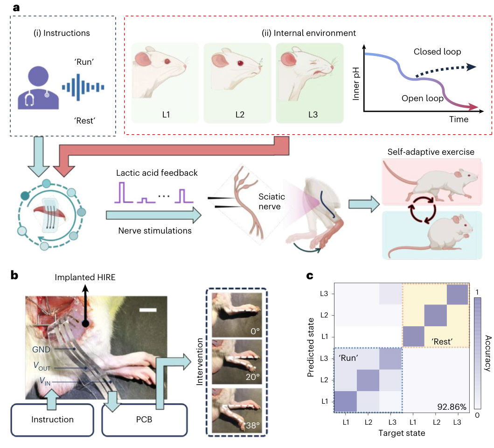
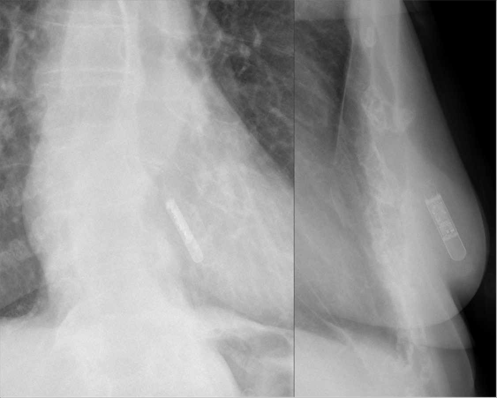
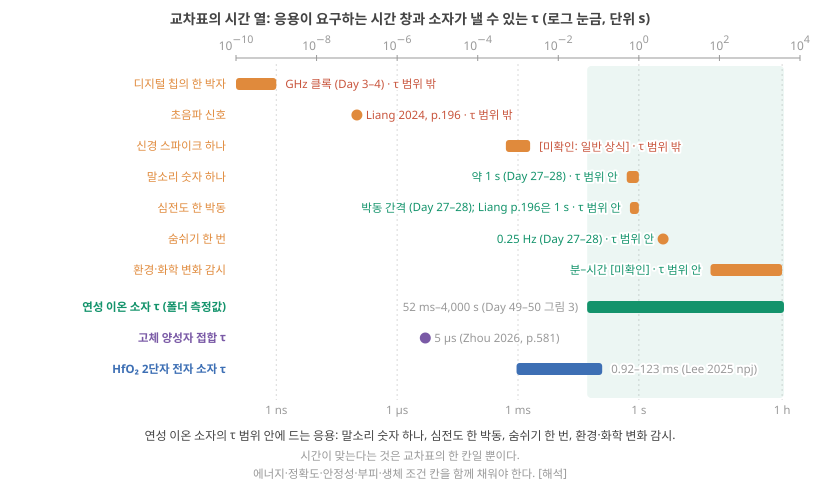
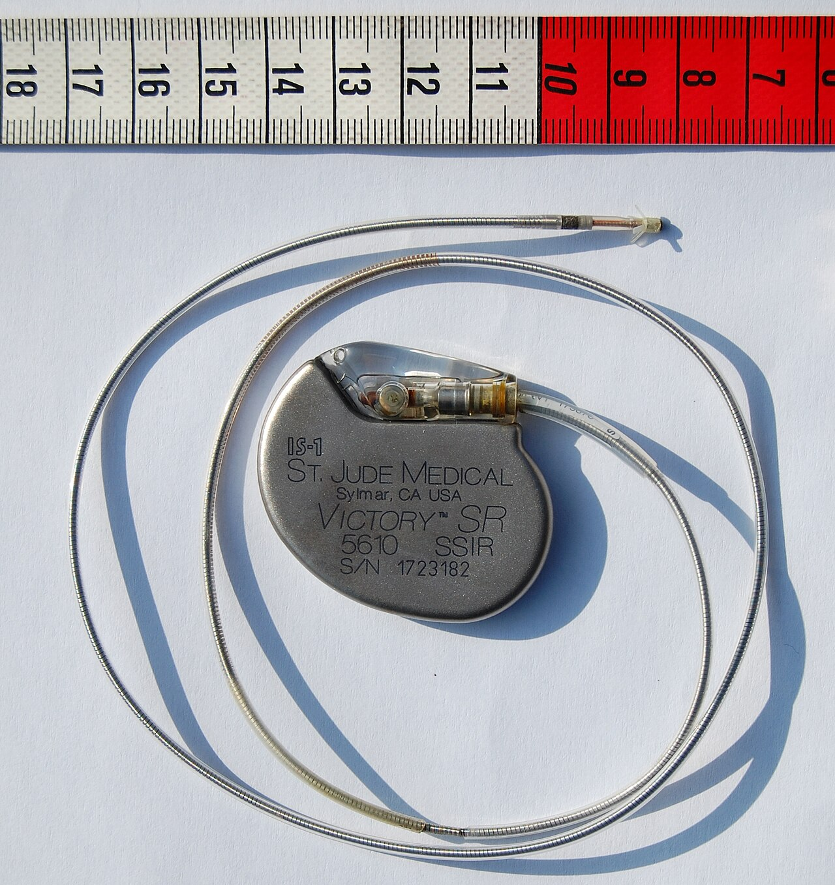
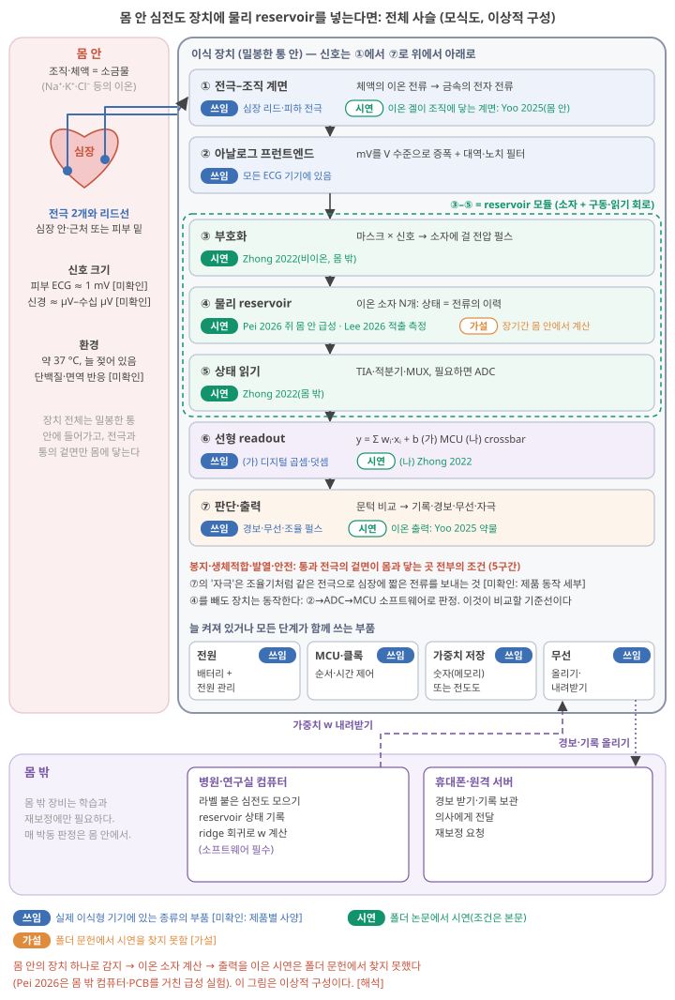
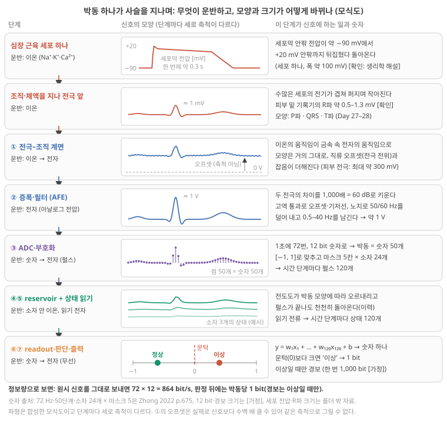
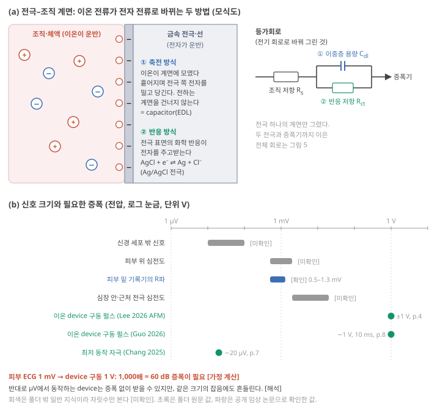
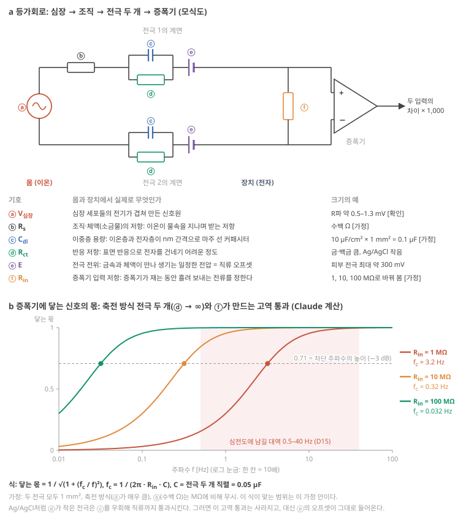

D27. 어떤 문제에서 고분자 이온 소재가 전자·광학 소재보다 경쟁력이 있는가?
Phase 5 · 나는 무엇을 연구해야 하는가 · 11월 18일 (수)
답에 들어가야 할 것 — 응용이 요구하는 사양 대 메커니즘이 허용하는 사양의 교차표. 이 차이가 곧 병목
기본 경로: ① 사전 테스트(권장) → ② 학습자료(구간마다 잠깐 점검까지) → ③ 백지 회상 → ④ 가르치듯 내 답. ⓪·⑤와 접힌 '심화'·'추가 연습'은 선택입니다. 한 번에 끝낼 필요 없이 구간 단위로 나눠 읽어도 되고, 다시 열면 '지난번 읽던 곳' 링크가 뜹니다.
① 사전 테스트와 먼저 만들어 보기
아직 배우지 않은 내용을 먼저 풀어 봅니다. 많이 틀리는 것이 정상이고, 그게 목적입니다. 먼저 답해 본 문제는 읽을 때 눈에 들어오고 더 오래 남습니다. 문제마다 정답만 보이고, 이유는 학습자료와 ⑤ 다시 풀기에서 봅니다. 다 풀면 학습자료가 열립니다. 건너뛰려면 학습자료 위의 '그냥 읽기'를 누르세요(권장 단계일 뿐 필수는 아닙니다).
② 학습자료
Phase 5의 셋째 날입니다. D25에서 이 분야가 무엇을 입증했는지, D26에서 무엇이 실용화를 막는지 봤습니다. 다시 짧게 말하면, 물리 reservoir computing(RC)은 고정된 물리계(reservoir, 오늘은 이온 소자)가 입력 이력을 내부 상태로 바꾸고, 그 상태에 가중치를 곱해 더하는 마지막 층(readout)만 데이터로 학습하는 방식입니다(D8 기초). 오늘은 방향을 뒤집어 묻습니다. 그렇다면 고분자 이온 소재가 전자·광학 소재를 이길 수 있는 문제는 어디인가? 이 질문에 답하려면 두 가지가 필요합니다. 하나는 응용이 요구하는 것과 이온 메커니즘이 허용하는 것을 같은 표에 놓는 교차표이고, 다른 하나는 그 응용이 실제로 어떤 장치로 만들어지는지에 대한 구체적인 그림입니다. 오늘은 그 그림으로 몸 안에서 심전도를 읽는 장치를 처음부터 끝까지 그립니다. 전극이 이온 전류를 받는 순간부터, 이상 박동을 알리는 순간까지.
- 뉴로모픽 컴퓨팅과 RC는 지금 어디에 '시연'되었고, 어디에 실제로 쓰이나?
- "경쟁력이 있다"를 어떻게 판정하나? 응용 요구 사양과 메커니즘 허용 사양의 교차표란?
- 몸 안 심전도 장치에 물리 reservoir를 넣는다면, 신호는 몸에서 어떻게 감지되어 reservoir까지 가나?
- reservoir의 상태는 어떻게 읽고, readout은 왜 선형이며 어디서 계산하나? 학습은 어디서 하고, 이 구성에서 소프트웨어는 어디를 맡나? 완전 아날로그는 가능한가?
- 판단·출력·전원·봉지·안전까지 이으면, 이상적인 구성과 지금 도달한 수준은 얼마나 떨어져 있나?
- 그래서 고분자 이온 소재가 이길 수 있는 문제는 무엇인가?
1. 응용 지도: 무엇이 시연됐고 무엇이 쓰이나
이 구간을 읽고 나면 뉴로모픽 컴퓨팅과 물리 RC의 응용을 '시뮬레이션 / 실험실 시연 / 실제 사용'으로 나눠 말하고, 폴더의 이온 소자 응용 시연이 어느 칸에 있는지 짚을 수 있다.
뉴로모픽 컴퓨팅과 RC의 응용 지도: 시연과 사용을 가르기
세 칸. 어떤 응용이든 세 단계 중 하나에 있습니다. (가) 시뮬레이션: 소자의 측정값이나 모형을 컴퓨터에 넣어 계산으로만 보인 것. (나) 실험실 시연: 실제 소자로 실제 신호를 처리해 보였지만, 측정 장비·PC가 곁에 있고 한두 번 해 본 것. (다) 실제 사용: 제품이나 현장에서 사람들이 쓰는 것. D15에서 RC 응용 지도를 그리며 "폴더의 RC 응용은 모두 시연"이라고 했습니다(D15 1-1절). 오늘은 그 지도를 넓혀, 이온 소자의 응용 시연 전체와 "쓰이는 것"의 칸을 함께 봅니다.
뉴로모픽 컴퓨팅 전체. 뉴로모픽이라는 이름 아래에는 여러 줄기가 있었습니다(D1). 디지털 스파이킹 칩, 아날로그 in-memory 계산, 소재 기반 물리 계산(D1 2구간; 디지털·아날로그의 뜻은 D3 기초 1). 그중 실리콘 칩 줄기에는 연구용 칩과 시험 보급이 있다고 알려져 있지만, 그것이 어떤 제품에서 얼마나 쓰이는지는 폴더 원문으로 확인하지 않았습니다 미확인. Roadmap은 생체 모방 계산 하드웨어가 배치될 수요로 뇌–기계 인터페이스, 웨어러블 시스템 등을 듭니다 Roadmap 2026, p.8139. Liang 리뷰는 전자식 물리 RC가 시연된 과제로 파형 분류, 손글씨·말소리 숫자, 생체신호 처리, 부드러운 구동기, 웨어러블, 제스처, 컴퓨터 비전을 듭니다 Liang 2024, p.201.
이온 소자의 응용 시연. 폴더 논문을 응용 갈래로 모으면 아래 표가 됩니다. 마지막 두 열이 핵심입니다. 이온 소자가 계산을 했나, 그리고 어디서 했나.
표를 읽기 전에, 낱말 몇 개. 급성 실험(acute experiment)은 동물을 마취한 채 소자를 넣고 그 한 번의 마취 동안 재고 끝내는 실험입니다. 깨어난 동물에 넣어 며칠–몇 달 지켜보는 만성 실험(chronic experiment)과 달라서, 장치가 몸 안에서 오래 버티는지는 보여 주지 못합니다. MCU(마이크로컨트롤러)는 작은 계산기·기억장치·입출력 회로를 한 칩에 넣은 제어용 칩이고(D5 기초: 센서 노드), Arduino는 MCU를 얹은 실험용 보드, PCB(인쇄 회로 기판)는 부품을 납땜해 이은 회로판, 소스미터는 전압을 걸고 전류를 재는 실험실 장비입니다. "측정 상태 + lookup"은 소자에서 잰 상태 값을 표로 만들어 두고, 컴퓨터가 그 표를 찾아보며 나머지 계산을 한 경우입니다(D25 4구간).
| 응용 갈래 | 폴더의 예 | 무엇을 했나 | 이온 소자가 계산? | 어디서 |
|---|---|---|---|---|
| 촉각·시각 감지 + 판정 | Wu 2025, Zhou 2025 | 문턱을 넘으면 로봇 팔 동작 | 아니요(문턱 비교는 MCU·컴퓨터 소프트웨어) | 실험실 |
| 반사 로봇 | Chang 2025 | 서미스터 → 생분해 시냅스 → 로봇 손 | 아니요(문턱) | 실험실, 소스미터·Arduino·노트북 Chang 2025, p.9, 11 |
| 음성 명령·보철 | Pei 2026 | 음성 4종 인식, 손상 뒤 같은 readout; 마취한 쥐의 다리 근육 곁에 넣은 소자로 음성 명령과 근육 pH 상태를 판별해 좌골신경 자극 세기를 바꿈 | 예(reservoir 상태는 몸 안의 소자), 마스킹·readout은 컴퓨터, 자극 신호는 PCB | 실험실 Pei 2026, p.1203; 마취한 쥐 2마리의 급성 실험 Pei 2026, p.1205 Pei 2026, Methods |
| 손글씨·말소리 벤치마크 | Guo 2026, Lee 2026 (ACS Nano), Lee 2026 (AFM) | 측정 상태로 분류 | 측정 상태 + lookup | 컴퓨터 안 (D25) |
| 신경 자극 | Dai 2024 | 압력 → 하이드로겔 이온 전위 → 쥐 좌골신경 자극 | 아니요(감지·전달) | 마취한 쥐에서 급성 실험 Dai 2024, p.6, 8 |
| 화학 신호 뉴런 | Wang 2022 | 도파민 감지 → memristor → 하이드로겔 도파민 방출·쥐 다리 움직임 | 문턱형 처리 | 실험실, 동물 Wang 2022, p.593 |
| 심장 신호 조절 | Chen 2023 (읽음) | 전자 신호 → 여러 종류의 이온 신호로 바꿔 황소개구리 심장의 전기 활동 조절 | 아니요(신호 변환) | 실험실 Chen 2023, p.565 |
| 약물 방출 | Yoo 2025 | 전위로 여닫는 이온 다이오드가 항암제 방출 | 아니요(정해진 시간표대로) | 쥐 복강에 이식, 배터리·무선 스위치 Yoo 2025, p.5 |
| 이식형 reservoir | Lee 2026 (AFM) | 쥐 피하 5일 이식 뒤 꺼내서 MNIST | 측정 상태(꺼낸 뒤) | 몸 밖에서 측정 Lee 2026 (AFM), p.6 |
표에서 읽을 것. 이온 소자의 응용 시연은 "감지·자극·방출·신호 변환"과 "측정 상태로 분류" 두 무리로 나뉩니다. 앞의 무리는 몸이나 조직과 신호를 주고받는 데 이온의 장점을 쓰지만 계산은 거의 하지 않고, 뒤의 무리는 계산을 하지만 대부분 몸과는 떨어져 있습니다. 두 무리가 한 장치에서 만난 시연은 폴더에서 Pei 2026 하나뿐이고, 그것도 마취한 쥐(2마리)에서 한 급성 실험이며 입력 부호화·readout은 몸 밖 컴퓨터, 자극 신호는 PCB가 맡았습니다 Pei 2026, p.1205 Pei 2026, Methods. 실제 사용 칸은 이온 뉴로모픽 소자에 대해 비어 있습니다 [미확인: 폴더 밖 제품 정보]. 해석
원문 그림을 읽기 전에. 아래 Pei 2026의 그림 5는 표에서 두 무리가 한 장치에서 만난 유일한 시연입니다. a는 개념(음성 지시와 몸 안 pH → 소자 → 신경 자극), b는 실제 사진, c는 판별 결과입니다. b에서 몸 안에 있는 것과 몸 밖에 있는 것을 구별해 보세요.


Aluru 2026은 바로 이 점을 겨냥합니다. 이온 계산은 적어도 처음에는 CMOS(보통 디지털 칩을 만드는 기술)와 경쟁하지 말고 뇌–컴퓨터 인터페이스 같은 생의학 응용을 노려야 한다고 요약면에 쓰고 Aluru 2026, p.592, 결론에서 극한의 에너지 효율과 생물학적 호환성이 필요한 뇌–기계 인터페이스, 생의학 감지, 현장 환경 감시가 "CMOS와 직접 경쟁하기보다" 현실적인 시험장이 될 것이라고 씁니다 Aluru 2026, p.600. Wang 2025도 생체와의 상호작용 연구가 대부분 이온 신호로 신경 활동을 한 방향으로 조절하는 데 머물렀고 진정한 양방향 소통은 아직이며, 이런 소자들이 뉴로모픽 시스템보다는 주로 에너지 소자였다고 정리합니다 Wang 2025 (Chem. Soc. Rev.), p.329. 리뷰들의 권고는 오늘 판단의 출발점일 뿐, 정답은 아닙니다. 그 권고가 맞는지를 교차표와 장치 그림으로 따져 보는 것이 오늘의 일입니다.
- 응용은 시뮬레이션 / 실험실 시연 / 실제 사용으로 나눈다. 이온 뉴로모픽 소자의 실제 사용 칸은 폴더에서 비어 있다 미확인.
- 이온 소자의 시연은 "몸과 신호를 주고받기(감지·자극·방출)"와 "측정 상태로 분류"로 갈린다. 둘이 한 장치에서 만난 것은 Pei 2026의 급성 동물 실험(readout은 몸 밖 컴퓨터)뿐이다 Pei 2026, p.1205 해석.
- 리뷰들은 생의학·환경 응용을 이온 계산의 현실적 시험장으로 꼽는다 Aluru 2026, p.592, 600. 그 권고를 교차표로 검사한다.
2. 교차표: 응용이 요구하는 것 vs 메커니즘이 허용하는 것
이 구간을 읽고 나면 응용 요구 사양과 메커니즘 허용 사양을 같은 표에 놓는 교차표를 직접 채우고, 칸마다 '맞음/모자람/모름'을 판정해 이온 소재가 경쟁할 수 있는 응용과 없는 응용을 근거와 함께 가를 수 있다.
응용 요구 사양 vs 메커니즘 허용 사양: 교차표
왜 교차표인가. "이온 소재는 생체 친화적이라 좋다", "이온 소재는 느려서 나쁘다"는 말은 둘 다 반쪽입니다. 좋고 나쁨은 어떤 응용에서인지가 붙어야 정해집니다. 그래서 가로줄에는 응용을, 세로줄에는 사양의 축을 놓고, 칸마다 두 숫자를 나란히 적습니다. 응용이 요구하는 값(출처와 함께)과 이온 메커니즘이 허용하는 값(폴더의 측정값). 두 값이 겹치면 맞음, 모자라면 그 칸이 병목, 폴더 문헌에서 잰 값을 찾지 못했으면 모름입니다.
사양의 축. 이 교재는 아홉 축을 씁니다. 시간척도(τ, 시간상수: 자극을 끊은 뒤 남은 변화가 처음의 37%로 줄어드는 데 걸리는 시간, D4 기초: 커패시터), 에너지·전력, 정밀도·상태 수, 크기·집적 밀도, 내구·수명, 동작 환경(물·염·온도), 기계적 성질(부드러움), 화학 선택성(어떤 이온·분자를 구별하나), 생체적합성. 앞의 다섯은 전자 소자가 대개 유리한 축이고, 뒤의 넷은 이온·연성 소재가 원리적으로 유리할 수 있는 축입니다. D19에서 이온이 전자보다 느리고 성글지만 여러 종류의 운반자와 화학 선택성, 물속 동작이라는 자유도를 가진다는 것을, D24에서 그 이온 물리(정류, 고갈층의 비선형, 여러 시간상수)를 계산 기능(primitive)에 대응시키는 표를 봤습니다(D19 기초: 이동도와 확산계수, D24 기초: 계산 primitive). 해석
한 줄 채우기의 예: 몸 안 심전도 장치.
| 축 | 응용이 요구하는 것 | 이온 메커니즘이 허용하는 것 (폴더) | 판정 |
|---|---|---|---|
| 시간척도 | 박동 간격 약 0.6–1 s(안정 시 1분에 60–100번, D15 기초: 심전도); 심전도 시간상수 1 s Liang 2024, p.196 | 연성 이온 소자 τ 52 ms–4,000 s (D26) | 맞음 |
| 에너지 | 수년 배터리 [미확인: 제품 사양] | 소자 자극 fJ–pJ(µV–mV), ±1 V 계면 충전은 1 mm²당 약 50 nJ [가정] (D26) | 모름 — 시스템 에너지 측정 없음 |
| 정밀도 | 정상/이상 두 값 판정 | 4-bit 16단계 구별 Lee 2026 (AFM), p.4 | 맞음(판정이 단순하므로) |
| 크기·밀도 | 노드 수십–수백 [가정] | mm 크기 겔, 10×10 수율 시험 (D26) | 아슬아슬 |
| 내구·수명 | 1년 약 1.6 × 10⁹ 펄스(1박동/s × 박동당 50펄스, D26 3-3절), 수년 | 보고된 최대 수천 펄스, 생체 안 장기 시험 없음 (D26) | 모자람 |
| 동작 환경 | 37 °C 소금물, 늘 젖음 | 하이드로겔은 젖어 있어야 동작, 생리 조건 시험은 거의 없음 | 가능성 있으나 미확인 |
| 기계적 성질 | 조직과 비슷하게 부드러움 [미확인: 요구 수치] | 하이드로겔·이온겔은 부드럽고 늘어남 | 맞음 |
| 화학 선택성 | 심전도에는 필요 없음 | 이온 종류 선택성(D20, Chen 2023) | 해당 없음 |
| 생체적합성 | 장기 이식 수준 [미확인: 기준] | 세포 3일·조직 4일 시험 Lee 2026 (AFM), p.6 | 짧은 시험만 |
표를 읽는 법. "모자람" 칸이 이 응용의 병목이고(D26의 결론과 같습니다), "맞음" 칸 중 전자 소자는 맞지 않는 칸이 경쟁 우위의 후보입니다. 몸 안 심전도에서 이온 소재만 맞는 칸은 기계적 성질과 (아마도) 동작 환경입니다. 다만 "이온 소재만 맞는다"는 판정에는 조건이 붙습니다. 전자 소자도 아주 얇은 금속·플라스틱 필름으로 만들면 휘어지기는 합니다. 하이드로겔·이온겔이 앞서는 것은 늘어나야 하고, 조직처럼 무르고(신경 조직 약 1–100 kPa, D19 3-4절), 젖은 채로 이온을 직접 주고받아야 하는 자리입니다. 휘어지기만 하면 되는 자리라면 이 칸도 전자 소자가 맞을 수 있습니다. 그런데 이 두 칸은 전극과 조직이 만나는 자리의 이야기이지, reservoir 계산의 이야기가 아닙니다. 이 차이가 6구간의 결론을 정합니다. 해석
시간 열만 따로 그리기. 교차표의 첫 열(시간척도)을 응용 여럿에 대해 한 축에 놓은 것이 그림 1입니다. 가로축은 로그 눈금이라 한 칸이 10배입니다(D1 기초: 로그 축). 연성 이온 소자 τ의 범위(초록 띠) 안에 드는 응용과 밖에 있는 응용을 보세요.

이제 여섯 응용으로 교차표를 넓혀 봅니다. 칸마다 자세한 숫자 대신 판정만 적었습니다. 판정은 오늘 자료의 근거로 한 해석이며, 내 답에서는 내 응용으로 바꿔 숫자와 출처를 채웁니다.
| 응용 | 시간 | 에너지 | 정밀도 | 밀도 | 내구·수명 | 젖은 환경 | 부드러움 | 화학 선택성 | 이온만 맞는 칸이 있나 |
|---|---|---|---|---|---|---|---|---|---|
| 데이터센터 대량 추론 | ✗ (ns) | ✗ | ✗ (8 bit 이상) | ✗ | ✗ | 불필요 | 불필요 | 불필요 | 없음 → 경쟁 안 됨 |
| 피부 위 심전도 패치 | ✓ | ? | ✓ | ✓(노드 적음) | △ (주–월) | △ (땀·건조) | ✓ | 불필요 | 부드러움 정도 |
| 몸 안 심전도 장치 | ✓ | ? | ✓ | △ | ✗ (수년) | ✓? | ✓ | 불필요 | 조직 계면 |
| 신경 인터페이스 | ✗–△ (ms 스파이크) | ? | △ | ✗ (전극 수백–수천 미확인) | ✗ | ✓? | ✓ | △ (신경전달물질) | 조직 계면, 화학 신호 |
| 연성 로봇·촉각 피부 전처리 | ✓ | ? | ✓ | △ | △ | 불필요 | ✓ | 불필요 | 부드러움·늘어남 |
| 화학·환경 감시(이온 종류) | ✓ (분–시간) | ? | ✓ | ✓ | △ | ✓ (물속) | 불필요 | ✓ | 화학 선택성 + 젖은 환경 |
표가 가리키는 방향. 이온만 맞는 칸이 있는 응용은 모두 물·조직·이온과 직접 닿는 자리입니다. 그리고 그 칸들은 대부분 계산보다 감지와 계면의 칸입니다. 이 방향은 Aluru와 Wang 2025의 권고와 같습니다. 다만 거의 모든 줄에서 에너지가 "?"이고, 몸 안 응용에서는 내구가 "✗"입니다. 즉 "어디서 경쟁할 수 있나"의 답은 "어디서 경쟁할 수 있을지 모른다, 측정이 필요하다"를 상당 부분 포함합니다. 해석
- 교차표: 가로 = 응용, 세로 = 사양 축(시간·에너지·정밀도·밀도·내구·환경·부드러움·화학 선택성·생체적합성). 칸마다 요구값과 허용값을 나란히, 판정은 맞음/모자람/모름.
- "모자람" 칸이 병목, "이온만 맞는" 칸이 경쟁 우위 후보. 몸 안 심전도에서는 내구가 모자라고, 이온만 맞는 칸은 조직 계면(부드러움·젖은 환경)이다 해석.
- 이온만 맞는 칸이 있는 응용은 물·조직·이온과 닿는 자리다. 에너지 칸은 거의 모든 응용에서 아직 "모름".
3. 몸 안 심전도 장치 (1): 몸에서 감지해 reservoir까지
이 구간을 읽고 나면 몸 안 심전도 장치의 전체 사슬(전극 → 증폭·필터 → 부호화 → 물리 reservoir → 상태 읽기 → 선형 readout → 판단·출력, 그리고 전원·무선)을 그림 없이 순서대로 말하고, 그중 앞 네 단계(감지부터 reservoir까지)에서 신호가 어떤 모양과 크기로 바뀌는지 숫자로 설명할 수 있다.
왜 이 장치인가. 이온 소재의 장점(물속 동작, 부드러움, 몸과 같은 이온 운반자)이 가장 잘 살 것 같은 자리가 몸 안이고, 심전도는 D15·D17에서 이미 배운 신호이며, 폴더에서 하드웨어로 판별한 RC 시연(Zhong 2022)과 몸에 넣었던 이온 reservoir(Pei 2026, Lee 2026 (AFM))가 모두 있는 주제입니다. 이 장치를 처음부터 끝까지 그려 보면, 이온 소재가 "어디서" 무엇을 해야 하는지가 구체적으로 보입니다. 아래 기초 상자가 전체 지도이고, 이어지는 절과 4·5구간이 단계마다 자세히 들어갑니다.
몸 안 심전도 장치의 전체 사슬: 감지에서 판단까지, 학습은 어디서, 소프트웨어는 어디에
이 장치가 하는 일. 가슴 피부 밑이나 심장 가까이에 넣어 두고, 심장이 뛸 때마다 그 박동이 정상인지 이상(부정맥)인지 판정하고, 이상이면 기록하거나 알리거나(무선), 필요하면 심장에 짧은 전기 자극을 줍니다. 오늘날 이런 일을 하는 이식형 의료기기(심장 박동기, 삽입형 심전도 기록기)는 전자 회로로 만들어져 있다고 알려져 있습니다 [미확인: 제품 구조와 사양은 폴더에 없음]. 오늘 그리는 것은 그 사슬 한가운데에 이온 소자 reservoir를 넣는 가상의 장치입니다.

큰 그림을 먼저. 그림 2를 위에서 아래로 따라가세요. 왼쪽 분홍 칸이 몸, 오른쪽 회색 통이 장치, 아래 보라 띠가 몸 밖입니다. 상자마다 붙은 배지는 세 종류입니다. 쓰임(파랑): 실제 이식형 기기에 있는 종류의 부품[미확인: 제품별 사양]. 시연(초록): 폴더 논문에서 보인 것(조건은 본문). 가설(주황): 폴더 문헌에서 아직 시연을 찾지 못한 것.

단계별로. 박동 하나가 장치를 지나가는 순서입니다. 단계마다 세 가지를 적었습니다. 그 부품이 하는 일, 그래서 신호가 어떻게 바뀌나(숫자로), 그리고 무엇이 운반하나(이온, 전자, 숫자). 그림 3은 같은 단계를 신호의 모양으로 한 장에 그린 것이니, 단계를 넘기며 옆에 두고 보세요.

① 감지 — 이온에서 전자로.
- 하는 일: 심장 근육 세포는 수축 직전 세포막을 사이에 두고 Na⁺·K⁺·Ca²⁺ 같은 이온이 드나들며, 막 안팎의 전압이 약 −90 mV에서 +20 mV 안팎까지 뒤집혔다 돌아옵니다(세포 하나의 활동 전위) [확인: 일반 생리학 해설]. 수많은 세포가 차례로 이렇게 하면 그 전기가 소금물인 체액을 따라 이온의 움직임으로 주변에 퍼집니다. 장치의 금속 전극이 체액에 닿아 있으면, 전극 표면에서 이온의 움직임이 금속 안 전자의 움직임으로 바뀌어야 전선을 따라 장치로 갈 수 있습니다. 바뀌는 방법은 둘입니다(그림 4a). 이온이 표면에 모였다 흩어지며 반대편 전자를 밀고 당기는 축전 방식(전기이중층, D20 기초: EDL), 그리고 표면의 화학 반응이 전자를 주고받는 반응 방식(예: Ag/AgCl).
- 신호의 변화: 세포 하나의 약 100 mV 폭이 두 전극 사이에서는 mV 이하로 작아집니다. 전기가 퍼지며 흩어지고, 두 전극은 그 '차이'만 보기 때문입니다. 피부 밑에 넣는 삽입형 기록기가 잡는 R파(박동에서 가장 큰 봉우리)는 소아 환자 87명의 평균 약 1.3 mV(D'Souza 2017, J. Innov. Card. Rhythm Manag.), 다른 비교 연구에서 전극 간격 약 4 cm 장치의 중앙값 0.50 mV, 약 7 cm 장치 0.78 mV로 보고됩니다(Pitman 2022, J. Electrocardiol. 73, 42) [확인: 초록의 숫자]. 전극 간격이 길수록 차이가 크게 잡힌다는 뜻입니다. 여기에 전극이 두 가지를 더합니다. 금속과 체액이 만나 생기는 일정한 전압(직류 오프셋, 피부 전극에서 약 300 mV [확인: TI 응용 노트 SBAA160A, p.2])과 잡음입니다. 3-2절의 등가회로가 이 단계를 숫자로 다룹니다.
- 운반자: 이온 → 전자.
② 증폭과 필터 — 아주 작은 전압을 쓸 만한 크기로.
- 하는 일: 증폭기(amplifier)는 전지에서 에너지를 끌어와, 들어온 전압과 같은 모양이면서 더 큰 전압을 만드는 회로입니다. 심전도에서는 두 전극의 전압 차이를 키웁니다. 두 전극에 똑같이 실린 성분(몸 전체에 함께 실리는 전원선 잡음의 상당 부분)은 차이를 잡을 때 빠집니다 [해석: 일반 회로 지식]. 함께 D15의 필터가 기저선 흔들림(아주 느린 성분)과 전원선 잡음(50/60 Hz)을 줄입니다(D15 기초: 필터, D15 기초: 심전도). 이 묶음이 아날로그 프런트엔드(AFE)이고, 소자를 쓰든 안 쓰든 필요합니다(D17 2구간).
- 신호의 변화: D25·D26의 이온 소자들은 ±1 V 펄스로 동작합니다 Lee 2026 (AFM), p.4. 1 mV를 1 V로 키우려면 1,000배입니다. 증폭 배율은 흔히 데시벨(dB)로 적습니다. dB = 20 × log₁₀(출력 전압 ÷ 입력 전압)이고, log₁₀(1,000) = 3(10을 세 번 곱한 수)이므로 20 × 3 = 60 dB입니다(왜 20을 곱하는지와 거꾸로 바꾸는 법은 3-3절의 dB 기초). 순서도 중요합니다. 직류 오프셋(수백 mV)까지 1,000배 하면 수백 V가 되어 증폭기가 낼 수 있는 전압의 끝에 붙어 버립니다(포화). 그래서 오프셋을 고역 통과로 먼저 덜어 내거나 첫 단의 배율을 낮게 둡니다 [해석: 일반 회로 지식]. 결과는 0.5–40 Hz 안팎의 박동 모양만 남은, 약 1 V 크기의 전압입니다.
- 운반자: 전자(아날로그 전압).
③ 부호화 — 신호를 소자에 걸 펄스로.
- 하는 일: 증폭된 신호를 일정한 간격으로 끊어 각 순간의 값을 전압 펄스로 바꿉니다. 소자가 여럿이면 같은 값을 소자마다 다른 무게로 곱해 걸어(마스크, D10 기초) 서로 다른 상태를 만듭니다. 이 일은 아날로그 회로(스위치·곱셈기)로 할 수도, ADC(아날로그 값을 숫자로) → MCU(작은 범용 계산 칩) → DAC(숫자를 전압으로)의 디지털 경로로 할 수도 있습니다(D4 기초 5, D17 2구간).
- 신호의 변화: Zhong 2022의 설정으로 보면, 1초에 72번 값을 뽑고 박동 하나를 0.7 s로 자르므로 72 × 0.7 ≈ 숫자 50개입니다 Zhong 2022, p.675. 이것을 [−1, 1]로 맞추고 소자 24개에 마스크 5칸으로 넣으면, 시간 단계마다 펄스 120개(24 × 5)가 소자로 갑니다. 디지털 경로라면 ADC의 눈금도 봐야 합니다. 12 bit ADC는 범위를 2¹² = 4,096칸으로 나누므로, 1 V 범위라면 한 칸이 1 V ÷ 4,096 ≈ 0.24 mV입니다 [가정: 1 V 범위]. 증폭하기 전의 1 mV 신호는 이 눈금에서 약 4칸에 불과합니다. ②에서 먼저 키우는 이유가 이것입니다.
- 운반자: 숫자 → 전자(펄스).
④ 물리 reservoir — 이온이 과거를 품는다.
- 하는 일: 펄스를 받은 이온 소자 안에서 이온이 움직여 전도도(전류가 얼마나 잘 흐르나)가 조금 바뀌고, 펄스가 끝나면 서서히 돌아옵니다. 다음 펄스가 오기 전에 다 돌아오지 않으므로, 지금의 전도도에는 최근 몇 펄스의 흔적이 섞여 있습니다(fading memory, D9 기초).
- 신호의 변화: 박동 하나(약 0.7 s, 50단계) 동안 소자 24개의 전도도가 박동의 모양에 따라 서로 다르게 오르내립니다(그림 3의 초록 곡선). 소자의 τ가 박동 시간과 맞아야 이 흔적이 쓸모 있습니다(D13 기초). 그림 1의 시간 열에서 연성 이온 소자의 τ 범위(52 ms–4,000 s)가 박동 간격 0.6–1 s를 덮은 것이 이 조건입니다.
- 운반자: 소자 안에서는 이온, 전극 바깥에서는 전자.
⑤ 상태 읽기 — 이온 소자의 지금 값을 숫자 목록으로.
- 하는 일: 정해진 순간마다 작은 읽기 전압을 걸고 흐르는 전류를 잽니다. 전류는 TIA(전류를 전압으로 바꿔 키우는 증폭기)나 적분기(전류를 일정 시간 모아 전압으로 만드는 회로)로 전압이 되고, 소자가 여럿이면 MUX(여러 선 중 하나를 고르는 스위치)로 차례로 읽거나 소자마다 회로를 둡니다(D17 2구간).
- 신호의 변화: 소자 24개 × 마스크 5 = 상태 120개이므로, 한 시간 단계의 결과는 숫자(또는 전압) 120개의 목록 \(x\)입니다 Zhong 2022, p.675.
- 운반자: 전자.
⑥ 선형 readout — 곱해서 더하기 한 번.
- 하는 일: 상태 목록에 학습해 둔 가중치를 곱해 더합니다. \(y = w_1 x_1 + w_2 x_2 + \cdots + w_{120} x_{120} + b\). 계산하는 곳은 둘 중 하나입니다. (가) MCU가 숫자로(상태마다 ADC 필요), (나) 비휘발 memristor(이력에 따라 저항이 바뀌고, 전원을 꺼도 그 값을 유지하는 소자)를 격자로 엮은 crossbar가 전류로(Ohm 법칙과 전류 합, ADC 없음; D26 기초). 이 단계가 왜 선형이어야 하는지, 가중치 \(w\)는 어디서 정하는지가 4구간의 주제입니다.
- 신호의 변화: 숫자 120개 → 숫자 하나 \(y\).
- 운반자: 숫자(가) 또는 전자(나).
⑦ 판단과 출력.
- 하는 일: \(y\)가 정해 둔 문턱보다 크면 "이상 박동"입니다. 그다음은 장치의 목적에 따라 다릅니다. 기록(메모리에 저장), 경보(무선으로 휴대폰에), 또는 자극(같은 전극으로 심장에 짧은 전류를 보냄 [미확인: 제품 동작 세부]).
- 신호의 변화: 숫자 하나 → 1 bit(정상/이상). 원시 신호를 그대로 보낸다면 1초에 72 × 12 = 864 bit [가정: 샘플당 12 bit]인데, 판정 뒤에는 이상일 때만 짧은 경보를 보냅니다. 5-2절의 에너지 예산에서 이 차이가 가장 큰 이득으로 나옵니다.
- 운반자: 숫자 → 전자(무선, 자극 전류) → 몸 안에서는 다시 이온.
⑧ 늘 켜져 있는 것과 몸 밖. 배터리와 전원 관리, 순서와 시간을 맞추는 MCU와 클록, 가중치를 저장할 메모리, 무선 송수신기가 늘 함께 있습니다. 그리고 가중치를 계산(학습)하는 컴퓨터는 몸 밖에 있습니다. 몸 밖 컴퓨터가 정한 가중치를 무선으로 내려보내고, 장치는 매 박동 그 가중치로 판정만 합니다(4구간).
한 문장으로. 몸 안 심전도 장치에서 이온은 맨 앞(조직–전극 계면)과 가운데(reservoir 소자 안)에서만 운반자이고, 나머지는 모두 전자와 숫자의 세계입니다. 그래서 이온 reservoir를 넣으려면 ④의 입구(전자 → 이온)와 출구(이온 → 전자)에서 변환을 두 번 더 해야 합니다. 해석 D26에서 Roadmap이 경고한 이온–전자 변환의 지연·손실·왜곡이 바로 이 자리입니다 Roadmap 2026, p.8126.
3-1. 전극–조직 계면: 이온 전류가 전자 전류로 바뀌는 곳

그림 4a를 읽는 법. 왼쪽은 이온이 운반하는 세계, 오른쪽은 전자가 운반하는 세계입니다. 가운데 경계에서 일어나는 일이 두 갈래입니다. 축전 방식에서는 전하가 경계를 건너지 않습니다. 체액 쪽에 양이온이 모이면 금속 쪽에 전자가 끌려오고(커패시터의 두 판처럼), 그 전자의 움직임이 전선의 전류가 됩니다. 빠르게 변하는 신호는 잘 통과하지만 아주 느린 성분(직류)은 통과하지 못합니다. 커패시터가 직류를 막는 것과 같습니다(D4 기초: 커패시터). 반응 방식에서는 표면의 화학 반응(Ag/AgCl 전극이라면 AgCl + e⁻ ⇌ Ag + Cl⁻)이 전자를 실제로 주고받아 직류도 흐릅니다. 대신 반응에 쓰이는 물질이 조금씩 바뀌고 소모됩니다. D26에서 본 대로, 한 방향으로만 전압을 오래 걸면 Ag/AgCl 전극이 소모될 수 있어 이식 약물 방출 장치는 전압 방향을 번갈아 걸었습니다 Yoo 2025, p.5.
이온 소재가 이 경계에 서면. 금속 전극과 조직 사이에 하이드로겔을 끼우면, 조직 쪽 면은 같은 이온 운반자를 쓰는 부드러운 물질과 만납니다. Yoo 2025의 이식형 장치는 하이드로겔 구조를 PDMS(실리콘 고무)로 감싸되 조직과 닿는 면만 생체적합성 폴리아크릴아마이드 하이드로겔로 열어 두었습니다 Yoo 2025, p.3. Wang 2025는 생체 인터페이스에서 이온 소자를 조직 가까이에 두어 그 장점을 쓰고, 전자 소자는 멀리서 복잡한 신호 처리를 맡는 구성을 제안하면서, 이온–전자 계면에서의 효율적인 신호 변환이 핵심 과제라고 씁니다 Wang 2025 (Chem. Soc. Rev.), p.329. Chen 2023(읽음)은 반대 방향, 즉 전자 신호를 여러 종류의 이온 신호로 바꾸는 겔 소자로 황소개구리 심장의 전기 활동을 조절하고 그 변화를 심전도로 확인했습니다 Chen 2023, p.565.
3-2. 등가회로: 계면을 저항과 커패시터로 바꿔 그리면
왜 필요한가. 그림 4a는 계면에서 무슨 일이 일어나는지를 보여 주지만, "그래서 증폭기에 신호가 얼마나 닿나", "어떤 빠르기의 성분이 잘려 나가나"에는 답하지 못합니다. 이 질문에 숫자로 답하려고 계면의 전기적 성질을 저항(R)과 커패시터(C) 같은 부품을 이은 회로로 바꿔 그립니다. 이것이 등가회로(equivalent circuit)입니다. 전기화학 임피던스 분광법(EIS)에서 측정값을 Randles 회로(용액 저항 + (이중층 용량 ∥ 전하 이동 저항))로 맞추던 바로 그 방식입니다. 임피던스는 교류에서의 '전압 ÷ 전류'[Ω]와 위상이었습니다(D17 2구간).
구성: 부품 하나하나가 몸과 장치에서 무엇인가. 그림 5a는 심장에서 증폭기까지를 한 바퀴의 회로로 그린 것입니다. 전류는 심장(ⓐ)에서 조직(ⓑ)을 지나 전극 1의 계면(ⓒⓓⓔ)으로 들어가고, 증폭기(ⓕ)를 거쳐 전극 2의 계면을 지나 몸으로 돌아옵니다. 회로가 닫혀야 전류가 흐르므로 전극은 늘 두 개 이상입니다.
- ⓐ \(V_{심장}\): 심장 세포들의 전기가 겹쳐 만든 신호원. 크기는 단계 ①의 0.5–1.3 mV.
- ⓑ \(R_s\): 조직·체액(소금물)의 저항. 이온이 물속을 지나며 받는 저항으로, 전기화학에서 말하는 용액 저항입니다. 수백 Ω 정도로 둡니다 [가정].
- ⓒ \(C_{dl}\): 이중층 용량. 체액 쪽 이온층과 금속 쪽 전자층이 nm 간격으로 마주 선 커패시터입니다(D20 기초: EDL). 면적에 비례하며, D26과 같은 가정으로 10 µF/cm² × 1 mm² = 0.1 µF입니다 [가정, D26 3-1절].
- ⓓ \(R_{ct}\): 반응 저항(전하 이동 저항). 표면 반응으로 전자를 건네기가 얼마나 어려운지입니다. 반응이 잘 일어나지 않는 금·백금 같은 전극(축전 방식)은 아주 크고, Ag/AgCl 같은 반응 방식 전극은 작습니다. ⓒ와 나란히(병렬: 전류가 둘 중 어느 길로든 갈 수 있게 양 끝을 함께 이음) 그리는 이유는, 전류가 '이온을 쌓는 길'과 '반응으로 넘기는 길' 가운데 쉬운 쪽으로 나뉘어 흐르기 때문입니다.
- ⓔ \(E\): 전극 전위. 금속과 체액이 만나면 신호가 없어도 일정한 전압이 생깁니다. 두 전극의 \(E\)가 조금만 달라도 그 차이가 직류 오프셋으로 증폭기에 들어갑니다(단계 ①의 약 300 mV).
- ⓕ \(R_{in}\): 증폭기의 입력 저항. 증폭기가 전압을 '재는' 동안에도 아주 작은 전류가 흘러 들어가는데, 그 양을 정하는 저항입니다. 클수록 증폭기가 신호를 덜 건드립니다.

입력이 바뀌면 안에서 무엇이 변하나: 빠르기에 따라 달라지는 커패시터. 저항은 신호가 빠르든 느리든 같은 값이지만, 커패시터가 전류를 막는 정도(임피던스의 크기)는 빠르기에 따라 바뀝니다.
\[|Z_C| = \frac{1}{2\pi f C}\]
\(f\)는 1초에 몇 번 출렁이는가[Hz], \(C\)는 용량[F]이고 결과는 Ω입니다. 빠른 신호일수록 커패시터를 잘 지나가고(작은 \(|Z_C|\)), 직류(\(f = 0\))는 막힙니다(무한대). \(C = 0.1\) µF라면 10 Hz에서 \(1/(2\pi \times 10 \times 10^{-7}) \approx 159\) kΩ, 1 Hz에서 약 1.59 MΩ, 0.1 Hz에서 약 15.9 MΩ입니다. [Claude 계산]
그 결과 출력은: 전압이 나뉜다. 회로 한 바퀴에서 신호 전압 \(V_{심장}\)은 부품들에 나뉘어 걸리고, 증폭기는 그중 ⓕ에 걸린 몫만 봅니다(전압 분배). ⓕ가 계면의 임피던스보다 훨씬 크면 거의 다 닿고, 비슷하거나 작으면 많이 잃습니다. 계면의 임피던스는 느린 성분에서 커지므로 느린 성분부터 잃습니다. 즉 축전 방식 전극과 증폭기 입력 저항은 저절로 고역 통과 필터가 됩니다(D15 기초: 필터). 증폭기에 닿는 몫이 1/√2 ≈ 0.71로 떨어지는 빠르기를 차단 주파수(cutoff frequency) \(f_c\)라 하고, 이 회로에서는 \(f_c = 1/(2\pi R_{in} C)\)입니다. 여기서 \(C\)는 두 전극의 계면이 직렬로(전류가 차례로 지나가도록 한 줄로) 이어진 값입니다.
가정. 두 전극 모두 1 mm², 축전 방식(ⓓ가 매우 커서 무시), ⓑ의 수백 Ω은 MΩ에 비해 무시합니다. 같은 커패시터 두 개를 직렬로 이으면 용량은 절반이므로 \(C = 0.1/2 = 0.05\) µF \(= 5 \times 10^{-8}\) F.
증폭기 입력 저항 1 MΩ이면. \(f_c = 1/(2\pi \times 10^{6} \times 5 \times 10^{-8}) = 1/0.314 \approx 3.2\) Hz. 심전도에 남길 대역은 0.5–40 Hz인데 3.2 Hz 아래가 깎이므로 느린 P파·T파의 모양이 찌그러집니다. 1 Hz 성분은 \(1/\sqrt{1 + (3.2/1)^2} \approx 0.30\)배만 닿습니다.
10 MΩ이면 \(f_c \approx 0.32\) Hz이고 1 Hz 성분은 약 0.95배가 닿습니다. 100 MΩ이면 \(f_c \approx 0.032\) Hz로, 심전도 대역 전체가 거의 그대로 닿습니다(그림 5b의 초록).
뜻. 같은 전극이라도 증폭기의 입력 저항이 계면 임피던스보다 충분히 커야 신호 모양이 지켜집니다. 반대로 이 고역 통과는 쓸모도 있습니다. 직류 오프셋(ⓔ)과 아주 느린 기저선 흔들림을 덜어 내는 첫 필터가 되기 때문입니다. 다만 차단 주파수가 전극 면적과 소재에 따라 움직이므로, 설계에 쓰려면 계면의 \(C\)를 재야 합니다. Ag/AgCl처럼 ⓓ가 작은 전극은 ⓒ를 우회해 직류까지 통과시키므로 이 고역 통과가 사라지고, 대신 ⓔ의 오프셋이 그대로 들어옵니다. 해석
연구와의 연결: 전극 면적과 소재. 계면의 \(C\)는 면적에 비례합니다. 전극을 100 µm × 100 µm(1 mm²의 1/100)로 줄이면 \(C\)도 1/100이 되어 \(f_c\)가 100배 올라갑니다(100 MΩ의 경우 0.032 Hz → 3.2 Hz). D26에서는 이온 소자의 충전 에너지 ½CV²를 줄이려면 면적을 줄이라고 했는데(D26 3-1절), 같은 계면이 신호를 받는 전극이기도 하다면 면적을 줄이는 것은 신호를 잃는 쪽으로 작용합니다. 조직 경계에 reservoir를 두는 구성(3-4절)에서는 이 두 요구가 부딪힙니다. 반대로 이온이 표면만이 아니라 물질 속까지 드나드는 고분자(OECT 채널처럼 부피 전체가 충전되는 소재, D19 기초: OECT)는 같은 면적에서 \(C\)가 훨씬 클 수 있어, 작은 전극에서도 계면 임피던스를 낮게 유지할 수 있습니다. 이것이 고분자 이온·혼합 전도 소재가 감지 계면에서 앞설 수 있는 조건 하나입니다. 같은 큰 \(C\)가 소자로 쓸 때는 충전 에너지를 키우므로, 감지에는 장점인 것이 계산에는 비용이 됩니다. 해석
3-3. 신호의 크기와 증폭 배율: dB로 세기
데시벨(dB): 배율을 '10배가 몇 번인가'로 세기
왜 필요한가. 신호 사슬에서는 배율이 곱해집니다. 앞단이 10배, 뒷단이 100배면 전체는 1,000배이고, 필터는 어떤 성분을 1/100로 줄입니다. 배율이 1/1,000부터 100만 배까지 넓게 오가고 계속 곱해지므로, 회로를 다루는 사람들은 배율을 로그로 바꿔 더하기로 셉니다. 그 단위가 데시벨(decibel, dB)입니다. 로그 눈금은 D1에서 봤습니다(눈금 한 칸 = 10배, D1 기초: 로그 축).
정의. 전압 배율 \(A = V_{출력}/V_{입력}\)을 dB로 적으면
\[A_{dB} = 20 \times \log_{10} A\]
\(\log_{10} A\)는 "10을 몇 번 곱하면 \(A\)가 되나"입니다(\(\log_{10} 1{,}000 = 3\), \(\log_{10} 10 = 1\), \(\log_{10} 1 = 0\)). 앞의 20은 전압 배율이라서 붙습니다. dB는 본래 전력의 비율 \(10 \times \log_{10}(P_{출력}/P_{입력})\)로 정의되는데, 같은 저항에서 전력은 전압의 제곱에 비례하므로(\(P = V^2/R\)) \(10 \times \log_{10} A^2 = 20 \times \log_{10} A\)가 됩니다. 배율끼리의 비이므로 단위는 없습니다.
배율 → dB. 1 mV를 1 V로: \(A = 1/0.001 = 1{,}000\), \(\log_{10} 1{,}000 = 3\), \(20 \times 3 =\) 60 dB.
dB → 배율. 40 dB는? 거꾸로 풀면 \(A = 10^{40/20} = 10^{2} =\) 100배. 같은 식으로 20 dB는 10배, 0 dB는 1배(그대로)입니다.
이어 붙이면 더한다. 앞단 20 dB(10배)와 뒷단 40 dB(100배)를 이으면 60 dB(1,000배). 곱하기(10 × 100)가 더하기(20 + 40)가 됩니다.
줄이는 것은 음수. 1보다 작은 배율은 음수 dB입니다. 0.1배 = −20 dB, 0.01배(노치 필터가 50 Hz를 1/100로 줄이면) = −40 dB. 3-2절의 차단 주파수에서 닿는 몫 0.71배는 \(20 \times \log_{10} 0.71 \approx -3\) dB라서, 차단 주파수를 '−3 dB 점'이라고도 부릅니다. [Claude 계산]
쓸 때 조심할 것. dB는 비율이라 기준이 있어야 크기가 됩니다. "60 dB 증폭"은 1,000배라는 뜻이지 출력이 몇 V라는 뜻이 아닙니다. 그리고 전압 배율(20 log)인지 전력 배율(10 log)인지 확인해야 합니다. 같은 1,000배라도 전력 배율이면 30 dB입니다.
신호의 크기와 잡음. 그림 4b가 보여 주듯, 심장 신호(mV)와 이온 소자의 동작 전압(±1 V) 사이에는 약 1,000배의 간격이 있습니다. 길은 둘입니다. 신호를 1,000배 키우거나(증폭기가 필요하고 증폭기는 늘 켜져 있어야 함), µV–mV에서 동작하는 소자를 쓰거나(Chang 2025의 최저 동작 −20 µV Chang 2025, p.7). 뒤의 길은 증폭기를 줄일 수 있지만, 같은 크기의 잡음(근육 신호, 전원선 잡음, 소자 자체의 흔들림)에도 똑같이 흔들립니다. D18에서 본 상태 차이 대 반복 흔들림(Δ/σ)의 문제가 그대로 옵니다(D18 2구간). 해석
3-4. 부호화와 reservoir: 어디에 두나
이온 reservoir를 장치의 어디에 두나. 그림 2는 reservoir를 밀봉한 통 안에 두었습니다. 그런데 이온 소자는 젖어 있어야 동작합니다. 통 안에 두려면 소자마다 자기 전해질을 밀봉해 가둬야 하고(Lee 2026 (AFM)은 하이드로겔을 PDMS 안에 봉지했습니다 Lee 2026 (AFM), p.2), 물이 빠지지 않게 수년을 지켜야 합니다. 다른 자리도 있습니다. 조직과 닿는 경계에 reservoir를 두는 것, 즉 이온 소자가 전극이자 첫 처리 단계가 되는 구성입니다. 그러면 신호가 이온인 채로 소자에 들어와 ①의 이온→전자 변환 앞에서 처리됩니다. 대신 소자가 체액·단백질·면역 반응에 직접 노출됩니다. Zhu 2025는 연성 이온 소자의 장기 이식에서 하이드로겔 탈수, 이온 누출, 그리고 만성 이물 반응이 섬유질 막으로 계면을 덮어 절연하는 문제를 꼽고 Zhu 2025, p.19, 6개월 이상의 체계적인 생체 내 연구가 필요하다고 씁니다 Zhu 2025, p.19. 섬유질 막은 그림 5의 등가회로로 보면 ⓑ(조직 저항)에 두꺼운 저항층을 하나 더 얹는 셈이라, 같은 심장 신호가 더 작게 잡히고 잡음의 몫이 커질 수 있습니다 해석. 두 자리 중 어느 쪽이 나은지 보인 시연은 폴더 문헌에서 찾지 못했습니다. 가설
지금 도달한 것. ③–⑤를 하드웨어로 이어 실제 심전도(저장된 데이터)를 판별한 것은 Zhong 2022이고, 소자는 이온 소자가 아니라 산화물 memristor였으며 몸 밖에서 했습니다 Zhong 2022, p.674–677. 이온 소자로 ④를 몸에 넣은 시연은 둘입니다. Pei 2026은 하이드로겔 reservoir를 마취한 쥐의 피하와 다리 근육 곁(조직과 직접 닿는 자리)에 넣고 몸 안에서 상태를 읽어 음성 명령과 근육 pH 상태를 판별했지만, 쥐 2마리의 급성 실험이었고 입력 부호화와 readout은 몸 밖 컴퓨터(MATLAB)가 했습니다 Pei 2026, p.1205 Pei 2026, Methods. Lee 2026 (AFM)은 5일 뒤 꺼내서 쟀고 과제는 MNIST였습니다 Lee 2026 (AFM), p.6(5구간에 원문 그림). 둘 다 과제는 심전도가 아닙니다.
- 사슬: ① 전극–조직 계면(이온 → 전자) → ② 증폭·필터 → ③ 부호화(마스크 × 신호 → 펄스) → ④ 이온 reservoir → ⑤ 상태 읽기 → ⑥ 선형 readout → ⑦ 판단·출력, 그리고 전원·MCU·메모리·무선, 몸 밖의 학습 컴퓨터.
- 이온이 운반자인 곳은 조직–전극 계면과 reservoir 소자 안뿐이다. 이온 reservoir를 넣으면 소자의 입구(전자 → 이온)와 출구(이온 → 전자)에서 변환이 두 번 더 생긴다 해석.
- 심장 신호 mV(피부 밑 기록기의 R파 약 0.5–1.3 mV) vs 소자 구동 ±1 V: 약 1,000배 = 20 × log₁₀(1,000) = 60 dB 증폭이 필요하다. µV 소자는 증폭을 줄이지만 잡음에 같이 흔들린다.
- 등가회로: 조직 저항 R_s → 계면(이중층 용량 C_dl ∥ 반응 저항 R_ct, 전극 전위 E) 두 개 → 증폭기 입력 저항 R_in. 축전 방식 전극과 R_in이 고역 통과를 만들어 f_c = 1/(2π·R_in·C): 1 mm² 두 개(0.05 µF)에 1 MΩ이면 3.2 Hz로 심전도가 찌그러지고, 100 MΩ이면 0.032 Hz [가정 계산].
- reservoir의 자리는 통 안(밀봉 전해질 필요) 또는 조직 경계(노출, 섬유화). 조직에 닿게 둔 것은 폴더에서 Pei 2026의 급성 동물 실험뿐이고, 어느 쪽도 장기 시연은 폴더 문헌에서 찾지 못했다 가설.
4. 몸 안 심전도 장치 (2): 상태 읽기, 선형 readout, 학습, 소프트웨어
이 구간을 읽고 나면 readout이 왜 선형(곱해서 더하기)이어야 하는지 세 가지 이유로 말하고, 가중치를 어디서 학습해 어떻게 장치에 넣는지, 이 교재가 고른 구성(몸 밖 오프라인 학습 + MCU 제어)에서 소프트웨어가 맡는 곳이 어디인지, 그리고 완전 아날로그가 어디까지 가능한지 구분해 설명할 수 있다.
4-1. 왜 선형 readout인가
reservoir computing의 출발점을 다시 떠올립니다. RNN(과거 상태를 다음 단계로 넘기는 신경망)은 시간을 거슬러 기울기를 곱해 내려가야 해서 학습이 어려웠고, RC는 안쪽(reservoir)은 고정하고 마지막 층만 학습해 그 어려움을 피했습니다(D7 3구간). 몸 안 장치에서 이 선택은 세 가지 이유로 특히 중요합니다.
- 비선형 일은 reservoir가 이미 했다. reservoir는 입력 이력을 여러 상태로 비선형하게 펼칩니다(D8 기초). 펼친 뒤에는 정상 박동과 이상 박동의 상태들이 직선(면) 하나로 갈라질 수 있는 경우가 많고, 그러면 readout은 그 직선만 그으면 됩니다(D10 기초: 선형 분리). 이것이 RC의 약속이고, 그 약속이 이 소자에서 지켜지는지는 원시 입력 기준선(소자를 빼고 원래 입력을 같은 readout에 넣은 비교)으로 확인해야 합니다(D25).
- 학습이 연립방정식 한 번이다. 선형 readout의 가중치는 ridge 회귀(정답과의 오차 제곱 합에 가중치 크기의 벌점을 더한 값을 가장 작게 하는 \(w\)를 연립방정식 한 번으로 구하는 방법)로 풉니다(D8 기초: ridge). 이온 소자의 안쪽은 수식으로 미분할 수 없으므로, 소자를 통과해 기울기를 구하는 학습(역전파)은 쓸 수 없습니다. 선형 readout은 소자 안을 몰라도 소자 밖에서 학습할 수 있게 해 줍니다. 그리고 정답이 붙은 박동이 몇백 개뿐이어도 과적합(학습 데이터에만 맞고 새 데이터에 틀리는 것)이 덜합니다. 정해야 할 숫자가 상태 수(여기서는 120개와 \(b\) 하나)뿐이기 때문입니다.
- 계산이 작고, 물리로도 할 수 있다. 상태가 120개면 판정 한 번에 곱셈 120번과 덧셈 120번(MAC 120번, D2 3구간)입니다. 작은 MCU에게 가벼운 일이고, 곱해서 더하기는 crossbar가 Ohm 법칙과 전류의 합으로 물리적으로 하는 계산과 정확히 같습니다(D26). 비선형 readout(예: 은닉층이 있는 신경망)은 둘 다 어렵게 만듭니다.
작은 숫자로. 상태가 두 개뿐이라고 합시다. 정상 박동 끝의 상태가 \(x = (0.8, 0.2)\), 이상 박동 끝의 상태가 \(x = (0.3, 0.7)\)입니다. 가중치 \(w = (-1, 1)\), \(b = 0\)이면 정상은 \(y = -0.8 + 0.2 = -0.6\), 이상은 \(y = -0.3 + 0.7 = 0.4\). 문턱을 0에 두고 "0보다 크면 이상"(단계 ⑦)이라고 정하면 둘이 갈립니다. readout이 한 일은 곱셈 둘, 덧셈 하나, 비교 하나입니다. 상태가 120개여도 하는 일의 종류는 같습니다.
선형이 아닌 readout을 쓰면. Lee 2026 (AFM)은 은닉층 셋의 다층 신경망을 readout으로 썼습니다 Lee 2026 (AFM), p.4. 그러면 (1) 정확도의 얼마가 소자에서 왔는지 가르기 어렵고(D25), (2) 학습이 경사 하강을 수십 epoch 반복하는 일이 되어 몸 밖 컴퓨터의 부담이 커지며, (3) crossbar 한 장으로 물리 계산을 할 수 없습니다. 해석 몸 안 장치에서 readout을 선형으로 두는 것은 RC의 원래 설계를 지키는 일이기도 합니다.
4-2. 가중치는 어디서 학습하나, 그리고 소프트웨어는 어디에 필요한가

1단계 — 이식 전, 몸 밖에서 한 번. 학습에는 정답(라벨)이 붙은 박동이 필요합니다. 공개 데이터베이스(Zhong 2022가 쓴 MIT-BIH처럼)나, 의사가 판독한 환자의 기록입니다 [미확인: 실제 임상 절차]. 이 박동들을 그 장치에 들어갈 바로 그 reservoir에 통과시켜 상태를 기록합니다. 다른 칩의 상태로 학습한 가중치는 소자 간 편차 때문에 그대로 옮겨지지 않기 때문입니다(D18 3-2절). 기록한 상태와 정답으로 컴퓨터가 ridge 회귀를 풀어 \(w\)를 구합니다. 그다음 \(w\)를 장치에 넣습니다. 구성 (가)면 메모리에 숫자로 적고, 구성 (나)면 쓰고-읽고-고치기를 반복해 전도도로 씁니다. Zhong 2022에서는 이 쓰기 순환이 PC의 파이썬 프로그램으로 돌았습니다 Zhong 2022, p.680.
2단계 — 몸 안, 매 박동. 장치는 같은 \(w\)로 곱해서 더하고 문턱과 비교할 뿐입니다. 기울기 계산도, 회귀도 하지 않습니다. 1초에 한 번씩 수년간 반복합니다.
3단계 — 가끔, 점검과 재보정. 소자가 시간에 따라 변하면(drift) 같은 박동에 다른 상태가 나오고, 처음의 \(w\)로는 판정이 틀리기 시작합니다. 장치가 기록과 상태를 무선으로 올리면 몸 밖 컴퓨터가 성능을 확인하고, 필요하면 새 \(w\)를 계산해 내려보냅니다. 이때 다시 정답이 붙은 박동이 필요하다는 것이 몸 안 장치의 어려운 점입니다(누가, 얼마나 자주 라벨을 붙이나 미확인). 소자가 스스로 가중치를 고치는 칩 위 학습은 이 폴더의 이온 RC 문헌에서 시연을 찾지 못했습니다(2026-10 기준). 폴더에서 소자 위 학습을 하드웨어로 보인 것은 비이온 소자로 만든 Kim 2026의 비지도 학습 회로가 유일합니다 Kim 2026, p.543.
이 구성에서 소프트웨어가 맡는 곳. 사용자가 "어디까지 하드웨어로 되고, 어디서 프로그램이 필요한가"를 물을 때의 답입니다. 아래 표는 그림 2·6의 구성, 곧 가중치를 몸 밖 컴퓨터에서 ridge 회귀로 한 번 학습해 장치에 쓰고, 장치 안에서는 MCU가 순서를 정하는 구성을 기준으로 합니다. 표의 "필수"는 이 구성에서의 필수이지, 물리적으로 가능한 모든 학습·제어 방식의 필수조건이 아닙니다. 예를 들어 순서 제어나 통신 규약은 프로그램 대신 고정된 디지털 논리 회로(정해진 순서대로 상태를 바꾸는 회로)로 만들 수도 있고, 소자 안에서 국소 규칙으로 가중치를 고치는 하드웨어 학습 회로도 연구됩니다(폴더에서는 비이온 소자로 만든 Kim 2026의 비지도 학습 회로 Kim 2026, p.543). 그런 방식은 이 폴더의 이온 RC 문헌에서 확인되지 않았고, 정답(라벨)이 필요한 학습이라면 라벨을 누가 어떻게 주는지는 어느 방식이든 남습니다. 해석
| 일 | 어디서 | 이 구성에서 소프트웨어가 필요한가 |
|---|---|---|
| 가중치 학습(ridge 회귀) | 몸 밖 컴퓨터 | 필수 (연립방정식을 푸는 프로그램) |
| 가중치 쓰기(전도도에 쓸 때) | 몸 밖 컴퓨터 + 장치 MCU | 필수 (읽고–비교하고–펄스 주는 순환) |
| 순서·시간 제어(언제 펄스, 언제 읽기) | 장치 MCU | 필수 (펌웨어: 칩에 넣어 둔 작은 프로그램. 고정 논리 회로로 대신하는 구성도 가능) |
| 기록 저장, 무선 통신 | 장치 MCU + 몸 밖 | 필수 (통신 규약) |
| 재보정 판단 | 몸 밖 | 필수 |
| 증폭·필터 | 장치의 아날로그 회로 | 불필요(회로) |
| reservoir 계산 | 이온 소자 | 불필요(물리) |
| readout 곱셈·덧셈 | (가) MCU / (나) crossbar | (가) 필요(짧은 프로그램) / (나) 불필요(물리) |
| 문턱 비교 | 비교기 회로 또는 MCU | 회로로 하면 불필요 |
4-3. 완전 아날로그는 가능한가
D26에서 "완전 아날로그"가 가능한 조건을 봤습니다(D26 기초: reservoir만 vs readout까지). 몸 안 장치에 적용하면 답은 둘로 나뉩니다.
- 신호 경로는 원리상 가능하다. ② 증폭·필터 → ③ 아날로그 부호화 → ④ reservoir → ⑤ 적분기 → ⑥(나) crossbar → 비교기까지, 숫자로 바꾸지 않고 판정에 이를 수 있습니다. Zhong 2022가 몸 밖에서, 산화물 소자로, 저장된 심전도로 이 경로를 보였습니다 Zhong 2022, p.673–677. 조건은 readout 가중치가 재보정 주기 동안 충분히 안정하다는 것이고(비휘발·저drift), 이온 소자는 대체로 휘발성이라 readout은 다른 소자가 맡아야 할 가능성이 큽니다(D26).
- 장치 전체는 아니다. 순서 제어, 기록, 무선, 재보정은 디지털 부품이 필요하고, 이 구성에서는 그 일을 소프트웨어(펌웨어)가 맡습니다. 그리고 몸 밖에서 학습하는 이 구성에서는 학습 단계에 상태를 숫자로 기록해야 하므로 ADC가 필요합니다. Zhong 2022에서도 ADC는 학습 중 상태 샘플링과 가중치 쓰기에 쓰였습니다 Zhong 2022, p.679.
즉 "완전 아날로그"는 매 박동 반복되는 추론의 신호 경로에서 ADC와 디지털 곱셈을 없앤다는 뜻이고, 그 이득은 그 경로가 장치 에너지에서 차지하는 몫만큼입니다. 그 몫이 얼마인지가 5구간의 예산입니다.
- 선형 readout의 세 이유: reservoir가 비선형 일을 이미 했다 / 학습이 ridge 한 번이라 소자 안을 몰라도 되고 라벨이 적어도 된다 / 곱해서 더하기는 MCU에 가볍고 crossbar가 물리로 할 수 있다.
- 학습은 몸 밖에서 한 번(그 장치의 reservoir로 상태를 기록해야 함), 몸 안에서는 같은 w로 판정만, 가끔 무선으로 재보정. 이온 RC의 칩 위 학습은 이 폴더의 문헌에서 시연을 찾지 못했다(2026-10 기준).
- 몸 밖 오프라인 학습 + MCU 제어 구성에서 소프트웨어가 맡는 곳: 학습, 가중치 쓰기, 순서 제어, 기록·무선, 재보정 판단. 물리·회로로 가능한 곳: 증폭·필터, reservoir, crossbar readout, 문턱 비교. 학습·제어 방식이 다르면(고정 논리 회로, 하드웨어 학습 회로) 이 목록도 달라진다 해석.
- 완전 아날로그는 추론 신호 경로에서만 가능하다(Zhong 2022, 몸 밖) Zhong 2022, p.673–680. 이 구성의 장치 전체는 디지털 부품이 필요하다.
5. 몸 안 심전도 장치 (3): 출력, 전원, 안전, 그리고 지금 어디까지 왔나
이 구간을 읽고 나면 판단 뒤의 출력(기록·무선·자극)과 전원·봉지·발열·생체적합성의 조건을 말하고, 가정값으로 짠 1년 에너지 예산에서 무엇이 배터리를 먹는지 계산하며, 이상적 구성과 폴더 논문이 실제로 도달한 수준을 단계마다 표로 대조할 수 있다.
5-1. 출력: 판단을 무엇으로 바꾸나
판단 뒤의 출력은 셋입니다. 기록(이상 박동 전후의 신호를 메모리에 저장), 경보(무선으로 휴대폰·서버에 알림), 자극(심장에 짧은 전류). 폴더에는 이온 소자가 몸 안에서 "출력"을 한 시연이 하나 있습니다. Yoo 2025의 이온 다이오드 약물 방출 장치는 쥐의 복강, 종양 옆에 이식되어, 배터리와 무선 스위치로 2시간마다 6분 동안 약을 내보냈습니다 Yoo 2025, p.5. 이 장치는 감지나 판단 없이 정해진 시간표대로 동작했습니다. 즉 "판단 → 출력"의 고리가 닫힌 것은 아닙니다. 판단에 따라 출력을 바꾼 것은 Pei 2026입니다. 몸 안 소자의 상태로 몸 밖 컴퓨터가 음성 명령과 근육 pH 상태를 판별하고, 그 결과를 PCB가 좌골신경 자극 세기로 바꿔 다리 움직임 각도를 조절했습니다(마취한 쥐, 급성) Pei 2026, p.1205. 출력은 이온이 아니라 전극 자극이었습니다. Dai 2024는 압력을 받으면 이온 전위를 내는 하이드로겔을 쥐의 좌골신경에 백금선으로 이어 근육을 움직였지만, 하이드로겔은 몸 밖에 있었고 마취한 쥐에서 한 급성 실험이었습니다 Dai 2024, p.6, 8. 저자들은 생체 내 이식을 앞으로 시험할 일로 적습니다 Dai 2024, p.7. Zhu 2025는 무선 전력·데이터 전송과의 통합이 "완전히 이식할 수 있는 닫힌 고리 장치"에 필수라고 씁니다 Zhu 2025, p.18.
5-2. 전원: 1년 에너지 예산, 무엇이 배터리를 먹나
몸 안 장치는 배터리를 바꾸기 어렵습니다. 그래서 1년 동안 무엇이 에너지를 쓰는지가 중요합니다. 실제 부품 값은 폴더에 없으므로, D17에서 쓴 가정값(ADC 1 nJ/변환, 무선 50 nJ/bit)과 D26의 계면 충전 계산으로 자릿수만 봅니다. 모든 숫자는 [가정]이며 측정이 아닙니다.
원시 심전도를 1년 내내 무선으로 보내는 것과, mm 크기 이온 소자 24개를 1초에 72번씩 ±1 V로 충전하는 것 중 어느 쪽이 1년에 에너지를 더 쓸까요? 동전형 전지 하나(약 2,500 J)와 견주면 어떨까요? 단계를 넘기기 전에 어림해 보세요.
기준: 1년 = 31,536,000 s. 심전도는 1초에 72번 샘플한다고 둡니다(Zhong 2022의 72 Hz Zhong 2022, p.675).
경우 1 — 판정하지 않고 원시 신호를 무선으로 다 보낸다. 샘플 하나 12 bit [가정]이면 72 × 12 = 864 bit/s. × 50 nJ/bit = 43,200 nJ/s. 1 nJ/s = 10⁻⁹ J/s = 10⁻⁹ W이므로 43,200 nJ/s = 4.32 × 10⁻⁵ W = 43.2 µW. 1년이면 43.2 × 10⁻⁶ × 31,536,000 ≈ 1,362 J.
경우 2 — 장치 안에서 디지털 readout으로 판정(구성 가). 상태 120개를 72번/s 모두 ADC로 바꾸면 120 × 72 = 8,640 변환/s × 1 nJ = 8.64 µW, 1년 약 272 J. 경보만 보낸다면(1시간에 한 번 1,000 bit [가정]) 1년 8,760 × 1,000 × 50 nJ ≈ 0.44 J. MCU의 곱셈·덧셈 에너지는 가정값이 없어 넣지 않았습니다 미확인.
경우 3 — 아날로그 readout(구성 나). 상태–readout 사이 ADC가 없으므로 경우 2의 272 J이 거의 사라지고, 끝의 비교기와 경보만 남습니다(비교기 에너지 미확인).
잊기 쉬운 항목 — 이온 reservoir 자체. 1 mm² 전극의 이온 소자 24개를 ±1 V 펄스로 1초에 72번 충전한다면, 펄스 하나 약 50 nJ(D26의 ½CV² 가정)이므로 50 nJ × 24 × 72 = 86,400 nJ/s = 86.4 µW, 1년 약 2,725 J. 경우 1의 무선 전송보다 큽니다. 구동 전압을 0.1 V로 낮추면 100배 줄어 0.864 µW, 전극을 100 µm × 100 µm(1 mm²의 1/100)로 줄여도 100배 줍니다(그 대가는 3-2절: 같은 계면이 신호를 받는 전극이라면 차단 주파수가 올라갑니다). 이 줄은 두 가지를 적게 잡았습니다. (1) ½CV²는 커패시터에 저장되는 에너지이고, 전원이 펄스 한 번(충전 → 방전)에 실제로 내놓는 것은 그 두 배인 \(CV^2\)입니다(D26 3-1절). (2) Zhong 2022처럼 마스크 5칸을 시간 단계마다 따로 펄스로 건다면, 소자 하나가 받는 펄스는 1초에 72번이 아니라 360번입니다. 둘을 다 넣으면 이 줄은 10배까지 커질 수 있습니다.
배터리와 견주기. 동전형 리튬 전지 CR2032 하나는 3.0 V, 약 235 mAh입니다 [확인: Energizer CR2032 데이터시트]. 에너지로 바꾸면 3.0 V × 0.235 A × 3,600 s ≈ 2,540 J(V·A·s = J) [Claude 계산]. 위의 이온 소자 줄(1년 약 2,725 J, 적게 잡은 값)만으로 이 전지 하나를 1년 안에 다 씁니다. 실제 이식 기기의 전지는 종류·크기가 다르므로 미확인, 이 비교는 자릿수 감각용입니다.
정리. 이 가정 아래서 순서는 (이온 소자 충전, mm 크기·1 V일 때) > (원시 신호 무선 전송) > (디지털 readout의 ADC) ≫ (경보만 전송)입니다. 두 가지가 보입니다. 첫째, 몸 안에서 판정하는 것의 가장 큰 이득은 원시 신호를 보내지 않는 것이고, 이것은 reservoir가 이온이든 디지털이든 같습니다. 둘째, 이온 reservoir가 이득이 되려면 소자 구동 에너지(전압·면적)가 ADC보다 작아야 하고, 지금의 mm 크기·±1 V 소자는 그 반대일 수 있습니다. 해석 이것이 교차표의 에너지 칸이 "?"인 이유이고, 측정해야 할 첫 숫자입니다.
5-3. 생체적합성·봉지·발열·안전
폴더에 있는 것. Lee 2026 (AFM)은 하이드로겔을 독성 없는 PDMS로 봉지하고 Lee 2026 (AFM), p.2, 용출액으로 세포 생존(3일)과 증식을, 피하 이식 4일째 조직 염색으로 뚜렷한 염증 침윤이나 괴사가 없음을 보였습니다 Lee 2026 (AFM), p.6. Yoo 2025는 쥐에서 0·7·14일 혈액으로 염증·체중 변화·말초 면역 독성이 없음을 보였고 Yoo 2025, p.3, 생체 내 시험에서 전극을 실리콘(Kwik-Sil)으로 덮었습니다 Yoo 2025, p.8. Chang 2025는 소자가 흙 속에서 16일 안에 완전히 분해되고 인산완충식염수(PBS, pH 약 7.4)에서 24시간 넘게 형태를 유지했다고 보고하지만, 세포·동물 시험은 없습니다 Chang 2025, p.2–3.
폴더가 요구하는 것. Aluru 2026은 생체와의 통합을 일곱째 지식 공백으로 두고, 몸과 맞물리는 소재로 생물학적으로 호환되는 전압 안에서 동작해야 한다고 쓰며 Aluru 2026, p.599, 장기 안정성·효과적인 열 관리·재현성·생체 환경과의 매끄러운 통합을 남은 과제로 꼽습니다 Aluru 2026, p.599. 열은 별도의 지식 공백(넷째)입니다 Aluru 2026, p.595–596. Zhu 2025는 탈수·이온 누출·섬유화를 막는 봉지와 표면 설계, 6개월 이상의 생체 내 연구를 요구합니다 Zhu 2025, p.19–20. Wang 2022의 화학 뉴런은 도파민을 내보내려고 하이드로겔을 37.5–43.5 °C로 가열했고 Wang 2022, p.586, 저자들은 응답 시간·전력·체계적 봉지가 아직 탐구할 과제라고 씁니다 Wang 2022, p.593.
폴더에 없는 것. 이식 의료기기가 지켜야 하는 조직 온도 상승 한계, 누설 전류(장치에서 몸으로 의도하지 않게 새는 전류) 한계, 멸균, 수년 단위의 신뢰성 기준은 폴더에 없습니다 미확인. 하나만 예를 들면, 능동 이식 의료기기의 유럽·국제 표준(ISO 14708-1 계열)은 장치 겉면이 정상 체온보다 2 °C 넘게 뜨거워지지 않게 하는 것으로 알려져 있습니다 [미확인: 표준 원문은 유료라 열람하지 못했고, 의료기기 공학자의 공개 해설(Prutchi 2013, implantable-device.com)로만 확인]. 설계 숫자로 쓰려면 표준 원문을 확인해야 합니다. 이 한계가 이온 소자와 바로 부딪히는 예가 폴더에 있습니다. Wang 2022는 하이드로겔을 37.5–43.5 °C로 가열해 도파민을 내보냈는데(위), 위쪽 끝은 체온보다 6 °C 넘게 높습니다 해석. 생리 식염수 농도(약 150 mM)와 pH 7.4에서 이온 소자의 정류·기억 특성을 잰 결과도 오늘 대조한 범위에는 없었습니다(Pei 2026은 몸 안 근육 곁에서 동작했고 pH 7.4·7.2·7.0에 따라 달라지는 응답을 판별에 썼지만, 그 근거 자료는 Extended Data·SI에 있고 오늘 대조하지 않았습니다 Pei 2026, p.1205). Lee 2026 (AFM)은 10 mM KCl, pH 6에서 소자를 준비했습니다 Lee 2026 (AFM), p.7. 해석 고정 전하의 해리가 pH에 따라 달라지는 폴리전해질 접합(D24 기초)에서는 이 차이가 동작 자체를 바꿀 수 있습니다. 가설
직류와 전하: 왜 한 방향 전류를 피하나. 조직에 한 방향 전류(직류)가 오래 흐르면 그림 5의 ⓓ를 지나는 반응이 계속 일어납니다. 물이 분해되어 기체와 pH 변화가 생기거나 금속이 녹아 나와, 조직과 전극이 함께 상합니다 [해석: 전기화학 일반 원리]. 그래서 몸에 전류를 보내는 장치는 펄스마다 반대 방향 전류로 전하를 되돌리는(전하 균형) 방식을 쓰는 것으로 알려져 있고 [미확인: 제품 세부], Yoo 2025가 전압 방향을 번갈아 건 것도 같은 문제(전극 소모)를 피하려는 것이었습니다 Yoo 2025, p.5. ±1 V 펄스로 동작하는 이온 소자를 조직에 직접 닿게 두는 구성(3-4절)이라면, 조직 쪽으로 새는 직류가 얼마인지를 측정으로 보여야 합니다. 해석
5-4. 이상적 구성 vs 지금 도달한 수준
원문 그림을 읽기 전에. 아래 Lee 2026 (AFM)의 그림 4는 위 세 패널(A 이식과 적출 과정, B 혼동 행렬, C 정확도 비교)과 아래 세 패널(D–F 생체적합성)입니다. A의 화살표 순서("NIM Extraction → ANN Training → Prediction")와 C의 세로축이 어디서 시작하는지를 보세요.

| 단계 | 이상적 구성 | 실제 이식 기기에 쓰이는 것 미확인 | 폴더 논문의 시연 (조건) | 폴더 문헌에서 찾지 못한 것 가설 |
|---|---|---|---|---|
| ① 전극–조직 | 부드럽고 안정한 이온 계면 | 금속 전극·리드 | 하이드로겔–조직 계면, 쥐 복강(Yoo 2025, 출력용) | 이온 계면으로 심전도를 장기 감지 |
| ② 증폭·필터 | 저전력 AFE | 있음 | Zhong 2022의 증폭·MUX(몸 밖) | — |
| ③ 부호화 | 아날로그 마스크 | — | Zhong 2022(몸 밖) | 이온 소자에 맞춘 저전압 부호화 |
| ④ reservoir | 이온 소자 N개, 몸 안 동작 | — | 마취한 쥐 몸 안에서 상태 측정, 음성·pH 판별(Pei 2026, 급성, readout은 컴퓨터); 이식 5일 뒤 꺼내서 MNIST(Lee 2026 (AFM)); 심전도 하드웨어 RC는 산화물·몸 밖(Zhong 2022) | 몸 안에서 이온 소자로 심전도를 오래 계산 |
| ⑤ 상태 읽기 | 저전력 TIA·적분기 | — | Zhong 2022(몸 밖) | — |
| ⑥ readout | 선형, crossbar 또는 MCU | MCU의 소프트웨어 판정 미확인 | 아날로그 crossbar(Zhong 2022, 몸 밖), 나머지 이온 논문은 컴퓨터 | 이온 reservoir + 아날로그 readout |
| ⑦ 출력 | 경보·자극, 닫힌 고리 | 경보·자극 | 이식 약물 방출(시간표, Yoo 2025), 급성 신경 자극(Dai 2024), 판별 결과로 좌골신경 자극(Pei 2026, 몸 밖 컴퓨터·PCB 경유, 급성) | 몸 안 장치만으로 판단에 따라 출력하는 닫힌 고리 |
| 전원·무선 | 수년 배터리, 무선 | 있음 | 배터리 + 무선 스위치(Yoo 2025) | 이온 RC 장치의 에너지 측정 |
| 봉지·안전 | 수년, 37 °C 체액 | 있음 | PDMS 봉지, 4–14일 생체 시험(Lee, Yoo) | 6개월 이상 생체 내 이온 소자 Zhu 2025, p.19 |
한 줄 요약. 각 단계의 부품은 어딘가에서 한 번씩 보였지만, 몸 안의 한 장치로, 오래 이어진 시연은 폴더 문헌과 Claude가 확인한 범위(2026-10 기준)에서 찾지 못했습니다. 가장 가까운 것은 Pei 2026의 급성 동물 실험으로, ④는 몸 안에 있었지만 부호화·readout·자극 신호 생성은 몸 밖 컴퓨터와 PCB가 했습니다. 가장 먼 거리는 ④(몸 안에서 이온 소자로 오래 계산)와 수명입니다. 해석
- 출력의 폴더 시연: 이식 약물 방출(시간표대로, 배터리·무선 스위치) Yoo 2025, p.5, 급성 신경 자극(하이드로겔은 몸 밖) Dai 2024, p.6. 판단 → 출력의 고리는 Pei 2026이 몸 밖 컴퓨터·PCB를 거쳐 급성으로만 이었다 Pei 2026, p.1205.
- 1년 에너지 예산[가정]: mm 크기 이온 소자 24개를 ±1 V로 72번/s 충전 ≈ 86 µW(약 2,700 J) > 원시 신호 무선 43 µW(약 1,360 J) > 디지털 readout ADC 8.6 µW(약 270 J) ≫ 경보만 0.44 J. 몸 안 판정의 큰 이득은 원시 신호를 안 보내는 것, 이온 reservoir의 이득은 구동 에너지가 ADC보다 작을 때만 해석.
- 생체 시험은 4–14일 수준(Lee, Yoo), 요구는 6개월 이상 Zhu 2025, p.19. 생리 식염수·pH 7.4에서의 동작 시험은 오늘 범위에 없다.
- 단계의 부품은 따로따로 보였지만 몸 안의 한 장치로 오래 이어진 시연은 폴더 문헌에서 찾지 못했다(Pei 2026은 마취한 쥐에서 몸 밖 readout으로 급성).
6. 그래서 고분자 이온 소재가 이길 수 있는 문제는
이 구간을 읽고 나면 고분자 이온 소재가 경쟁력을 가질 수 있는 문제의 조건 네 가지를 말하고, 그 조건에 맞는 후보와 맞지 않는 응용을 교차표·장치 그림·에너지 예산을 근거로 가를 수 있다.
1–5구간을 모으면, 고분자 이온 소재가 이길 수 있는 문제의 조건이 보입니다. 정답이 아니라 판단의 틀입니다. 해석
- 이온·물·부드러움이 꼭 필요한 문제여야 한다. 교차표에서 "이온만 맞는 칸"(조직 계면, 젖은 환경, 화학 선택성, 부드러움)이 있어야 합니다. 그 칸이 없으면 전자 소자가 거의 모든 축에서 이깁니다.
- 속도·밀도·정밀도 요구가 이온의 허용 범위 안이어야 한다. τ가 ms–s, 노드가 수십–수백, 판정이 단순한 문제.
- 전자 해법도 거기서 비용을 치러야 한다. 예를 들어 전자 회로도 어차피 조직과의 이온–전자 변환을 해야 하고, 그 변환에 증폭기·전극 문제가 따라온다면, 그 자리에서 이온 소자가 일부 처리를 해 주는 것이 의미를 가질 수 있습니다.
- 요구 수명이 이온 소재가 버틸 수 있는 범위여야 한다. 수년 이식보다 수일–수주의 단기 이식, 생분해되어야 하는 장치, 교체가 쉬운 웨어러블이 현실적입니다. 가설
후보와 비후보. 조건에 비추면 이렇습니다. 해석
- 후보: (가) 조직과 닿는 경계의 전처리: 이온 소자가 전극 겸 첫 처리 단계가 되어, 신호를 이온인 채로 받아 느린 특징(적분, 박동 모양의 흔적)을 남기고 전자 회로에 넘기는 구성. Wang 2025가 그리는 "이온은 조직 가까이, 전자는 멀리"의 구도와 같습니다 Wang 2025 (Chem. Soc. Rev.), p.329. (나) 단기·생분해 이식: 수술 뒤 며칠–몇 주의 감시처럼 수명 요구가 짧고, 천연 고분자(Lee 2026 (AFM)의 히알루론산·키토산)나 생분해 소재(Chang 2025)의 장점이 사는 자리. (다) 화학·이온 종류를 시간 패턴으로 구별하는 감지: 여러 이온·분자의 신호를 구별하는 일은 이온의 고유한 자유도이고(Chen 2023, Aluru의 둘째 지식 공백), 환경 감시처럼 분–시간의 느린 문제는 τ도 맞습니다. (라) 연성 로봇·촉각 피부의 센서 옆 전처리: 부드러움·늘어남이 필요하고 노드가 적은 자리.
- 비후보: 데이터센터·대량 추론, 고해상도 영상, 정밀한 가중치 저장, 수년 이식에서 이온 소자가 장치 전체의 계산을 맡는 구성. 이 자리들에서는 교차표의 다섯 칸 이상이 "모자람"입니다.
후보마다 붙는 조건. 위 후보들은 '앞설 수 있다'는 것이지 늘 앞선다는 것이 아닙니다. 아래 표는 각 후보의 이유가 언제 성립하고 언제 깨지는지와, 그것을 가릴 첫 측정을 한 줄씩 적은 것입니다. 해석
| 후보 | 앞설 수 있는 이유 | 성립하는 조건 | 깨지는 경우 | 먼저 잴 것 |
|---|---|---|---|---|
| (가) 조직 경계 전처리 | 이온을 이온인 채로 받아, 증폭·변환의 일부를 줄인다 | 부피 용량이 커서 작은 면적에서도 계면 임피던스가 낮다(3-2절); 그 처리가 증폭기·ADC의 일을 실제로 줄인다 | 섬유화로 계면이 막힌다; ±1 V 구동이 조직 쪽 직류·반응을 만든다; 기준선과 부품 수가 같다 | 같은 면적 금속 전극 대비 임피던스와 신호 대 잡음비, 기준선 대비 에너지 |
| (나) 단기·생분해 이식 | 꺼내는 수술이 필요 없고 수명 요구가 짧다 | 요구 기간(수일–수주) 동안 성능이 유지되고 분해 산물이 안전하다 | 몸 안 분해 속도가 예측과 다르다(지금은 흙·PBS 시험뿐, 5-3절) | 몸 안 분해 시간과 그동안의 성능 drift |
| (다) 이온 종류 구별 감지 | 여러 이온·분자를 서로 다른 시간 패턴으로 구별한다(이온의 고유 자유도) | 대상 변화가 분–시간으로 느리고, 선택성이 생리 농도(약 150 mM 배경)에서도 남는다 | 배경 염이 선택성을 가린다; 이온 선택 전극(특정 이온에만 전위가 반응하는 전기화학 센서) + MCU가 같은 일을 한다 | 150 mM 배경에서의 구별 정확도, 이온 선택 전극 기준선 대비 |
| (라) 연성 로봇·촉각 피부 전처리 | 늘어나는 센서 바로 옆에서 처리한다 | 노드가 적고, 늘어남이 꼭 필요하며, 젖은 상태를 유지할 수 있다 | 탈수로 drift가 생긴다; 휘어지기만 하면 되는 자리라 얇은 전자 필름으로 충분하다 | 늘림 반복 뒤 상태 재현성, 건조 시간 |
원문 그림을 읽기 전에. 후보 (나)의 '생분해' 장점이 실제로 어떻게 생겼는지 Chang 2025의 그림 2로 봅니다. b는 필름 사진(위 건조, 아래 PBS 24시간), c는 잡아당긴 곡선, d는 흙 속 16일의 사진입니다. d에서 소자가 언제 사라지는지, 그리고 그곳이 몸이 아니라 흙이라는 것을 보세요.

그리고 반드시 붙는 단서. 위 후보 어디에서도 이온 reservoir가 같은 전극 + 증폭 + ADC + MCU 소프트웨어(그림 2의 기준선)보다 정확도·에너지·크기 중 하나라도 낫다는 측정은 폴더에 없습니다. 후보는 "경쟁할 수 있을지 모르는 자리"이고, 그것을 "경쟁하는 자리"로 바꾸는 것은 그 기준선과의 비교 실험입니다. 이 실험이 D28·D29의 가설과 기각 조건의 재료가 됩니다.
오늘의 반론
가장 강한 반론은 이것입니다. "생체 인터페이스가 이온 소재의 자리라면, 이온은 전극만 하면 된다. 부드러운 이온 전극으로 신호를 받고, 계산은 처음부터 성숙한 CMOS 회로가 하면 된다. 왜 굳이 이온 reservoir가 계산까지 해야 하나? 계산을 이온으로 하면 내구·재현성·에너지라는 새 문제만 늘어난다."
이 반론은 강하고, 오늘 자료의 상당 부분이 이 반론을 지지합니다. 교차표에서 이온만 맞는 칸은 대부분 계면의 칸이었고, 에너지 예산에서 mm 크기 이온 소자의 구동 에너지는 ADC보다 클 수 있었습니다. Wang 2025의 제안도 "이온은 조직 가까이, 계산은 전자 쪽"입니다. 그렇다면 이온 계산이 의미를 가지려면 계면에서 이온으로 처리하는 것이 무엇을 줄이는지를 보여야 합니다. 후보는 셋입니다. 증폭이 덜 필요해지거나(µV에서 동작하는 소자), 전자 쪽으로 보내는 데이터·변환 횟수가 줄거나, 이온–전자 변환 자체를 처리와 합쳐 부품이 줄어드는 것. 셋 다 폴더 문헌에서 측정을 찾지 못한 가설입니다. 이 반론에 대한 내 답을 양식의 "오늘의 반론" 칸에 적으세요. 반론을 받아들여 "이온은 계면, 계산은 전자"로 방향을 정하는 것도 정직한 답입니다.
그림 2를 다시 보고, 내 소재(예: 폴리전해질 접합, 이온겔)를 둘 수 있는 자리를 하나 고르세요. ① 경계(전극 겸 전처리), ④ 통 안 reservoir, ⑦ 출력(자극·방출) 중 어디인가요? 그 자리에서 내 소재가 기준선(같은 전극 + 증폭 + ADC + MCU)보다 무엇을 줄일 수 있는지 한 줄, 그것을 재는 실험 하나를 한 줄로 적어 보세요.
- 경쟁 조건: 이온·물·부드러움이 꼭 필요 / 속도·밀도·정밀도 요구가 낮음 / 전자 해법도 그 자리에서 비용을 치름 / 요구 수명이 짧거나 생분해가 필요 해석.
- 후보: 조직 경계 전처리, 단기·생분해 이식, 이온 종류 구별 감지, 연성 로봇 피부 전처리. 비후보: 대량 추론, 정밀 가중치, 수년 이식에서 계산 전체를 맡는 구성.
- 어느 후보도 "같은 전극 + 증폭 + ADC + MCU" 기준선보다 낫다는 측정은 폴더에 없다. 반론("이온은 전극만, 계산은 CMOS")은 강하다.
오늘의 총정리
자료를 덮고 아래 표를 먼저 머릿속으로 채운 뒤 펼쳐 보세요. 그다음 종합 퀴즈를 풉니다.
한 장 요약 펼치기
| 질문 | 한 줄 답 | 근거·조건 |
|---|---|---|
| 응용은 어디까지 | 이온 소자 응용은 "몸과 신호 주고받기"와 "측정 상태로 분류"로 갈리고, 둘이 만난 것은 Pei 2026의 급성 동물 실험뿐(readout은 몸 밖). 실제 사용은 없음 | [미확인: 제품] Aluru 2026, p.600 |
| 교차표 | 응용 × 사양 축, 칸마다 요구 vs 허용. 이온만 맞는 칸은 조직 계면·젖은 환경·화학 선택성·부드러움 | 에너지 칸은 대부분 "모름" |
| 사슬 | 전극(이온→전자) → 증폭·필터 → 부호화 → 이온 reservoir → 상태 읽기 → 선형 readout → 판단·출력, 전원·MCU·무선, 몸 밖 학습 | 사전 테스트와 '먼저 만들어 보기'의 그림과 비교해, 빠졌던 상자(증폭, 상태 읽기, 몸 밖 학습)가 달라질 지점 |
| 계면과 증폭 | 계면 = 조직 저항 – (이중층 용량 ∥ 반응 저항) + 전극 전위, 두 계면과 증폭기 입력 저항이 고역 통과를 만든다. 1 mV → 1 V는 1,000배 = 60 dB | f_c = 1/(2π·R_in·C): 1 mm² 두 개에 1 MΩ이면 3.2 Hz, 100 MΩ이면 0.032 Hz [가정 계산] |
| 왜 선형 readout | 비선형은 reservoir가 했고, 학습은 ridge 한 번(소자 안을 몰라도 됨), 계산은 작고 crossbar로도 가능 | MLP readout은 기여 귀속·학습·물리 구현을 어렵게 함 |
| 학습과 소프트웨어 | 몸 밖 오프라인 학습 + MCU 제어 구성에서는 학습·가중치 쓰기·순서 제어·무선·재보정을 소프트웨어가 맡는다(모든 학습·제어 방식의 필수조건은 아님). 신호 경로는 물리·회로로 가능 | 완전 아날로그는 추론 경로에서만 Zhong 2022, p.679–680 |
| 숫자 하나 | mm 크기 이온 소자 24개 ±1 V, 72번/s ≈ 86 µW > 원시 신호 무선 ≈ 43 µW > 디지털 readout ADC ≈ 8.6 µW | 모두 [가정]. 측정 필요 |
| 지금 어디까지 | 단계 부품은 따로따로 시연, 몸 안의 한 장치로 오래 이은 적 없음. 몸 안 reservoir는 마취한 쥐의 급성 실험(readout은 몸 밖), 이식 reservoir는 5일 뒤 꺼내서 측정 | Pei 2026, p.1205 Lee 2026 (AFM), p.6 Yoo 2025, p.5 |
| 반론 | 이온은 전극만, 계산은 CMOS가 하면 된다 | 계면 처리가 무엇을 줄이는지 측정해야 가설 |
| 모르는 것 하나 | 생리 조건(150 mM, pH 7.4, 37 °C)에서 이온 reservoir의 동작과 수명 | 오늘 범위에 측정 없음 |
내 답에 꼭 들어가야 할 것
- 교차표를 적어도 세 응용 × 다섯 축으로 채웠나? 칸마다 요구값의 출처와 허용값의 근거(폴더 측정값)를 적고, 모르는 칸은 "모름"으로 남겼나?
- "이온만 맞는 칸"과 "모자란 칸"을 구별하고, 경쟁 우위 후보를 그 칸으로 설명했나?
- 몸 안 장치의 사슬을 감지부터 출력까지 빠짐없이 적고, 이온이 운반자인 곳과 전자·숫자가 운반자인 곳을 구별했나?
- readout이 선형인 이유, 학습 위치, 소프트웨어가 필요한 곳, 완전 아날로그의 범위를 각각 한 줄 이상 적었나?
- 이상적 구성과 지금 도달한 수준을 단계마다 대조하고, "시연"과 "실제 사용"과 가설을 섞지 않았나?
- 오늘의 반론("이온은 전극만")에 내 판단을 적었나?
장부에 옮길 후보
- 병목 장부: (응용이 요구하는 것) 몸 안 심전도 장치의 수년 수명·약 10⁹ 펄스/년 vs (메커니즘이 허용하는 것) 연성 이온 소자의 보고된 내구 수천 펄스, 생체 내 4–14일 시험.
- 병목 장부: (응용) 배터리 수년 → 추론 경로의 에너지가 ADC보다 작아야 이득 vs (메커니즘) mm²·±1 V 계면 충전은 펄스당 약 50 nJ[가정]. 저전압·작은 면적의 동작이 필요하다.
- 병목 장부: (응용) 생리 식염수(약 150 mM)·pH 7.4·37 °C에서의 안정한 동작 vs (메커니즘) 폴리전해질 고정 전하의 해리·이온 선택성이 염 농도와 pH에 의존(D20·D24) — 측정 없음.
- 아직 모르는 것: 이온 reservoir 장치의 추론 한 번 에너지. / 조직 경계에 둔 이온 소자의 drift와 섬유화 영향. / 몸 안에서 재보정에 쓸 라벨을 누가 어떻게 붙이나. / 실제 이식형 심전도 기기의 전력·크기·수명 사양 미확인.
- 용어집: 응용 지도(시뮬레이션·시연·사용), 교차표, 사양 축, 전극–조직 계면, 축전 방식·반응 방식, 아날로그 프런트엔드, 증폭 배율(dB), 등가회로(R_s·C_dl·R_ct·E·R_in), 차단 주파수(−3 dB 점), 직류 오프셋, 급성/만성 실험, 마스크, 상태 읽기(TIA·적분기·MUX), 선형 readout, ridge, 펌웨어, 재보정, 완전 아날로그(추론 경로), 닫힌 고리, 봉지, 섬유화, 생분해.
- 접는 기준 후보: "내 소자를 조직 경계 전처리에 두어도 같은 전극 + 증폭 + ADC + MCU 기준선보다 에너지·부품 수·정확도 중 어느 것도 줄이지 못하면, '이온 계산'이 아니라 '이온 계면'으로 방향을 좁힌다."
더 읽을거리
서지와 읽음·대조 상태는 참고문헌 페이지에 있습니다. 쪽수는 인쇄 쪽수입니다. 아래는 모두 보충이며, 오늘 본문은 이것 없이 읽히도록 썼습니다.
내가 읽은 논문 (다시 볼 곳)
- Chen 2023, Science 382, 559–565. p.559(전자–이온 신호 변환), p.565(황소개구리 심장 조절과 심전도).
- Wang 2025, Chem. Soc. Rev. 55, 299–335. p.329(이온은 조직 가까이·전자는 멀리, 이온–전자 계면 변환, 한 방향 조절에 머문 생체 상호작용).
- Liang 2024, Nat. Electron. 7, 193–206. p.196(심전도 시간상수 1 s), p.201(RC 응용 목록).
폴더에 있지만 아직 읽지 않은 논문 (Claude가 대조함)
- Lee 2026, Adv. Funct. Mater. e76901. p.2(PDMS 봉지), p.4–6(16단계, MLP readout, 이식 뒤 적출 측정, 생체적합성), p.7–8(Methods).
- Pei 2026, Nat. Mater. 25, 1199–1208. p.1205(Fig. 5: 쥐 다리 근육 곁에 넣은 하이드로겔 reservoir로 음성 명령·pH 판별 → PCB → 좌골신경 자극), Methods(마취한 쥐 2마리, 마스킹·readout은 MATLAB).
- Yoo 2025, Adv. Mater. 37, 2412377. p.3(조직 접촉면, 독성), p.5(쥐 복강 이식, 배터리·무선 스위치, 전극 소모).
- Chang 2025, Nat. Commun. 16, 10610. p.2–3(생분해), p.7(−20 µV, 0.85 fJ), p.9(반사 시스템).
- Dai 2024, Device 2, 100436. p.6–8(쥐 좌골신경 급성 자극, 앞으로의 이식).
- Wang 2022, Nat. Electron. 5, 586–595. p.586, 593(도파민 감지·방출, 쥐 다리, 남은 과제).
- Zhong 2022, Nat. Electron. 5, 672–681. p.673–680.
- Kim 2026, Nat. Sensors 1, 535–544. p.540, 543(소자 위 비지도 학습, 마이크로컨트롤러).
- Aluru 2026, Science 392, 592–601. 요약면, p.595–596(열), p.598–600(생체 통합, 현실적 시험장).
- Roadmap 2026, ACS Nano 20, 8102–8163. p.8126(이온–전자 변환), p.8139(배치 수요).
- Zhu 2025, Adv. Mater. Technol. e01963. p.17–20(생체 통합 응용, 장기 이식의 문제, 6개월 이상 연구).
폴더 밖 미확인
- 오늘 숫자만 확인한 폴더 밖 자료(본문 전체는 대조하지 않음): 삽입형 기록기의 R파 크기(D'Souza 2017, PMC7252757; Pitman 2022, J. Electrocardiol. 73, 42, 초록), 피부 전극의 직류 오프셋(TI SBAA160A, p.2), CR2032 용량(Energizer 데이터시트), 심근 활동 전위(Wikipedia: Ventricular action potential).
- 이식형 심장 박동기·삽입형 심전도 기록기의 전력·수명·크기 사양, 이식 의료기기의 안전 기준(조직 온도 상승, 누설 전류, 멸균). 오늘 본문에서는 모두 미확인으로 두었다. 내 답에 숫자로 쓰려면 제조사 자료나 표준 문헌을 확인해야 한다.
④ 가르치듯 내 답
후배에게 설명한다고 생각하고 오늘 질문에 답합니다. 기본은 짧은 답입니다: 3–5문장, 또는 작은 도식 하나와 한 줄 설명, 그리고 설명하다 막힌 곳 한 줄. 이것만으로 정상적인 학습입니다. 왜·어떻게, 근거와 반론까지 쓰는 긴 종합 답안은 선택입니다. 주장에 확인 해석 가설 태그를 붙이면 좋고, 확인은 원문에서 직접 본 것에만 씁니다. 몇 번이고 고쳐도 됩니다. 막히는 곳은 따로 적어 두세요.
⑤ 다시 풀기 (선택)
① 사전 테스트와 같은 문제를 이유와 함께 다시 풉니다. 사전 테스트에서 정답을 이미 봤으므로 이 점수는 이해가 늘었다는 증거가 아니라 다시 떠올리기 연습입니다. 이해 점검은 학습자료의 잠깐 점검과 종합 퀴즈에서 처음 고른 답으로 봅니다.
⑥ 학습 완료
⑦ 피드백과 꼬리질문
내 답을 저장한 뒤 Claude에게 "D27 검토해줘"라고 말하세요. 맞게 이해한 점, 핵심 오류와 근거, 고쳐야 할 인과관계, 다시 답할 질문을 이 자리에 남깁니다.